IRIS — Manuel utilisateurIRIS — User Manual
Interception · Resolution · Injection · Substitution. Secrets are safe.
1PréambulePreamble¶
IRIS est un broker de credentials local pour macOS. Il s'interpose entre vos outils en ligne de commande
(agents CLI, gh, curl, scripts Python, serveurs MCP…) et les API distantes,
et substitue à la volée des placeholders inertes par les vraies valeurs tirées du trousseau macOS.
IRIS is a local credential broker for macOS. It sits between your command-line tools
(CLI agents, gh, curl, Python scripts, MCP servers…) and remote APIs,
substituting inert placeholders on the fly with the real values pulled from the macOS Keychain.
Le problème
The problem
Les agents IA sont structurellement vulnérables : prompt injection, fichiers malveillants dans un repo,
sorties d'outils non assainies — autant de vecteurs qui peuvent piéger un agent et l'amener à exfiltrer
ses propres credentials. Tant que la vraie clé API vit dans process.env, elle est à portée
d'un cat .env ou d'un POST construit dynamiquement.
AI agents are structurally vulnerable: prompt injection, malicious files in a repo, unsanitized tool
output — all vectors that can trick an agent into exfiltrating its own credentials. As long as the real
API key lives in process.env, it's one cat .env or one dynamically built POST away.
La réponse d'IRIS
IRIS's answer
Mettre une frontière de confiance entre l'agent et les secrets. L'agent fait son travail, IRIS détient les clés. Concrètement :
Put a trust boundary between the agent and the secrets. The agent does the work, IRIS holds the keys. Concretely:
- Vous remplacez
ANTHROPIC_API_KEY=sk-ant-…parANTHROPIC_API_KEY={{kc:anthropic_api_key}}. - Un proxy MITM local sur
127.0.0.1:8888intercepte les requêtes HTTPS sortantes. - Pour les hosts whitelistés (ex.
api.anthropic.com), il décrypte, détecte le placeholder, vérifie le scoping, substitue la vraie valeur, re-encrypte. - Pour les autres hosts, il fait un CONNECT-tunnel transparent — pas de déchiffrement, pas de substitution.
- You replace
ANTHROPIC_API_KEY=sk-ant-…withANTHROPIC_API_KEY={{kc:anthropic_api_key}}. - A local MITM proxy on
127.0.0.1:8888intercepts outbound HTTPS requests. - For whitelisted hosts (e.g.
api.anthropic.com), it decrypts, detects the placeholder, checks scoping, substitutes the real value, and re-encrypts. - For other hosts, it does a transparent CONNECT tunnel — no decryption, no substitution.
Ce mécanisme est agnostique : il ne protège pas que la clé d'un LLM. Tout secret que
vous enregistrez dans le trousseau — PAT GitHub, token npm, clé de registry, identifiants d'API
fournisseur… — et que vous référencez par {{kc:NAME}} (dans l'environnement ou
dans un fichier de configuration) est résolu de la même façon, et borné à ses allowed_hosts.
La vraie valeur ne quitte jamais le trousseau : votre env et vos fichiers ne contiennent que des
placeholders inertes.
This mechanism is agnostic: it doesn't only protect an LLM key. Any secret you store
in the Keychain — GitHub PAT, npm token, registry key, provider API credentials… — and reference via
{{kc:NAME}} (in the environment or in a config file) is resolved the same way,
and bound to its allowed_hosts. The real value never leaves the Keychain: your env and your
files only ever contain inert placeholders.
À qui s'adresse ce manuel. Développeurs et power-users macOS qui utilisent quotidiennement des agents CLI et veulent durcir la posture sécurité autour de leurs clés API sans changer leur workflow.
Who this manual is for. macOS developers and power users who use CLI agents daily and want to harden the security posture around their API keys without changing their workflow.
Ce que ce manuel couvre
What this manual covers
- Partie I — comprendre le modèle (concepts, architecture, flux, menace).
- Partie II — installer et configurer IRIS sur une machine.
- Partie III — la ligne de commande
iris. - Partie IV — l'application menu-bar.
- Partie V — exploitation : démarrage automatique, distribution, désinstallation, dépannage.
- Partie VI — extensibilité : écrire et gérer des plugins.
- Part I — understand the model (concepts, architecture, flow, threat).
- Part II — install and configure IRIS on a machine.
- Part III — the
iriscommand line. - Part IV — the menu bar app.
- Part V — operations: auto-start, distribution, uninstall, troubleshooting.
- Part VI — extensibility: writing and managing plugins.
IRIS 1.0 est complet : daemon, CLI, application menu-bar, installeur signé et notarisé, démarrage automatique et désinstallation propre sont tous livrés et exploitables dès aujourd'hui. La Partie III couvre l'usage en ligne de commande, la Partie IV l'application menu-bar — les deux pilotent le même daemon.
IRIS 1.0 is complete: daemon, CLI, menu bar app, signed and notarized installer, auto-start, and clean uninstall are all shipped and usable today. Part III covers command-line usage, Part IV the menu bar app — both drive the same daemon.
2Concepts fondamentauxCore concepts¶
Placeholder
Placeholder
Une chaîne au format {{kc:NAME}} où NAME est le nom d'un secret enregistré
dans IRIS. La regex stricte est \{\{kc:([a-zA-Z0-9_-]{1,64})\}\}.
A string in the form {{kc:NAME}} where NAME is the name of a secret registered
in IRIS. The strict regex is \{\{kc:([a-zA-Z0-9_-]{1,64})\}\}.
export ANTHROPIC_API_KEY="{{kc:anthropic_api_key}}"
export GITHUB_TOKEN="{{kc:github_token}}"Proxy MITM
MITM proxy
irisd écoute en HTTPS sur 127.0.0.1:8888. Vos outils y sont dirigés via la
variable d'environnement HTTPS_PROXY. Le proxy applique deux comportements distincts
selon que le host de destination est dans la whitelist MITM ou non.
irisd listens over HTTPS on 127.0.0.1:8888. Your tools are pointed at it via the
HTTPS_PROXY environment variable. The proxy applies two distinct behaviors
depending on whether the destination host is in the MITM whitelist or not.
Whitelist MITM
MITM whitelist
La liste des hosts pour lesquels IRIS accepte de jouer le man-in-the-middle (déchiffrer, scanner, substituer, re-chiffrer). Tout host absent de cette liste est traité en CONNECT-tunnel pur : IRIS forwarde les octets chiffrés sans les voir.
The list of hosts for which IRIS agrees to play man-in-the-middle (decrypt, scan, substitute, re-encrypt). Any host absent from this list is handled as a pure CONNECT tunnel: IRIS forwards the encrypted bytes without seeing them.
Allowed_hosts (scoping)
Allowed_hosts (scoping)
Chaque secret est lié à un ou plusieurs hosts autorisés. Le scoping est l'invariant central
d'IRIS : une clé Anthropic ne sera jamais substituée dans une requête vers GitHub, même si
l'agent essaie de la mettre dans un POST /issues.
Each secret is bound to one or more allowed hosts. Scoping is IRIS's central invariant:
an Anthropic key will never be substituted into a request to GitHub, even if
the agent tries to put it in a /issues POST.
CA locale
Local CA
Pour pouvoir déchiffrer le trafic vers les hosts whitelistés, IRIS génère un certificat racine ECDSA
P-256 local. La clé privée vit dans le trousseau de session (login Keychain), ACL-protégée pour le seul binaire signé
irisd. Le cert public est exporté en PEM sur disque (matériel public, accessible) et
ajouté au trust store macOS.
To decrypt traffic to whitelisted hosts, IRIS generates a local ECDSA P-256 root certificate.
The private key lives in the session Keychain (login Keychain), ACL-protected for the single signed
irisd binary only. The public cert is exported as PEM on disk (public material, accessible) and
added to the macOS trust store.
Survolez ou cliquez un nœud du diagramme
Hover or click a node in the diagram
Les trois acteurs principaux : l'outil hôte (qui ne voit que des placeholders), le proxy irisd (qui détient les clés du trousseau), et l'API upstream (qui reçoit du trafic indistinguable d'un trafic direct).
The three main actors: the host tool (which only sees placeholders), the irisd proxy (which holds the Keychain keys), and the upstream API (which receives traffic indistinguishable from a direct request).
3ArchitectureArchitecture¶
IRIS se décompose en trois cibles binaires et une bibliothèque partagée. Le tout repose sur SwiftPM
pour les trois binaires CLI/daemon, plus un projet Xcode pour la cible app (contrainte
SMAppService qui nécessite des plists embarqués dans un bundle).
IRIS breaks down into three binary targets and one shared library. It all relies on SwiftPM
for the three CLI/daemon binaries, plus an Xcode project for the app target (the
SMAppService constraint requires plists embedded in a bundle).
| Cible | Type | Rôle | Statut |
|---|---|---|---|
irisd | Daemon | Proxy MITM, IPC admin, événements SSE, accès Keychain | livré |
iris | CLI | Frontale opérateur : secrets, rules, status, logs, doctor, mcp wrap | livré |
Iris.app | Menu bar app | Monitoring temps réel, CRUD secrets, alertes, settings | livré |
IrisKit | Library | Modèles, config JSON, abstraction Keychain, CA, IPC, placeholder engine | livré |
| Target | Type | Role | Status |
|---|---|---|---|
irisd | Daemon | MITM proxy, admin IPC, SSE events, Keychain access | shipped |
iris | CLI | Operator front-end: secrets, rules, status, logs, doctor, mcp wrap | shipped |
Iris.app | Menu bar app | Real-time monitoring, secret CRUD, alerts, settings | shipped |
IrisKit | Library | Models, JSON config, Keychain abstraction, CA, IPC, placeholder engine | shipped |
Diagramme d'architecture
Architecture diagram
Cliquez sur un composant
Click a component
L'architecture est volontairement simple : un daemon central, deux clients (la CLI et l'app menu-bar), un trousseau pour la persistance, et les API upstream classiques.
The architecture is deliberately simple: one central daemon, two clients (the CLI and the menu bar app), a Keychain for persistence, and the usual upstream APIs.
Un point d'extension optionnel complète ce schéma : des plugins hors-process et sandboxés peuvent s'insérer dans le daemon, sur le flux des requêtes, avant le scan d'exfiltration et la substitution — sans jamais accéder aux secrets.
One optional extension point completes this picture: out-of-process, sandboxed plugins can hook into the daemon, on the request flow, before the exfiltration scan and substitution — without ever accessing secrets.
Structure du repo
Repo structure
iris/
├── Package.swift # SwiftPM, 3 targets binaires + IrisKit
├── Sources/
│ ├── IrisKit/ # Modèles, config, CA, IPC, placeholder engine
│ ├── irisd/ # Daemon
│ └── iris/ # CLI
├── Tests/
│ ├── IrisKitTests/ # Unit tests
│ └── IntegrationTests/ # Proxy end-to-end
└── docs/ # Manuels, audits, plansiris/
├── Package.swift # SwiftPM, 3 binary targets + IrisKit
├── Sources/
│ ├── IrisKit/ # Models, config, CA, IPC, placeholder engine
│ ├── irisd/ # Daemon
│ └── iris/ # CLI
├── Tests/
│ ├── IrisKitTests/ # Unit tests
│ └── IntegrationTests/ # End-to-end proxy
└── docs/ # Manuals, audits, plans4Flux d'une requêteRequest flow¶
Trace pas-à-pas d'une requête depuis un agent CLI vers api.anthropic.com, avec
substitution réussie. Naviguez entre les étapes pour suivre la mécanique.
A step-by-step trace of a request from a CLI agent to api.anthropic.com, with a
successful substitution. Move between the steps to follow the mechanics.
Étape 1 — L'agent construit sa requête
Step 1 — The agent builds its request
L'agent lit ANTHROPIC_API_KEY dans son env. Cette valeur est un placeholder, pas la vraie clé.
Il construit son POST /v1/messages normalement.
The agent reads ANTHROPIC_API_KEY from its env. That value is a placeholder, not the real key.
It builds its POST /v1/messages normally.
POST https://api.anthropic.com/v1/messages
x-api-key: {{kc:anthropic_api_key}}
content-type: application/json
{"model":"claude-…","messages":[…]}Étape 2 — CONNECT vers le proxy
Step 2 — CONNECT to the proxy
Le client HTTP honore HTTPS_PROXY=http://127.0.0.1:8888. Il ouvre TCP vers le proxy et
envoie un CONNECT plain-text pour réserver le tunnel HTTPS.
The HTTP client honors HTTPS_PROXY=http://127.0.0.1:8888. It opens TCP to the proxy and
sends a plain-text CONNECT to reserve the HTTPS tunnel.
CONNECT api.anthropic.com:443 HTTP/1.1
Host: api.anthropic.com:443Étape 3 — Vérification whitelist MITM
Step 3 — MITM whitelist check
Le daemon reçoit le CONNECT. Il vérifie api.anthropic.com contre la liste
hosts de config.json. Match trouvé → réponse 200 Connection Established.
The daemon receives the CONNECT. It checks api.anthropic.com against the
hosts list in config.json. Match found → 200 Connection Established response.
Si pas de match, le daemon aurait fait un splice TCP brut sans déchiffrer (event passThrough).
On no match, the daemon would have done a raw TCP splice without decrypting (a passThrough event).
HTTP/1.1 200 Connection EstablishedÉtape 4 — Double handshake TLS
Step 4 — Double TLS handshake
Côté agent : le daemon agit en serveur TLS. Il mint à la volée un cert leaf pour
api.anthropic.com, signé par la CA locale. ALPN n'annonce que http/1.1.
Agent side: the daemon acts as a TLS server. It mints a leaf cert on the fly for
api.anthropic.com, signed by the local CA. ALPN only advertises http/1.1.
Côté upstream : en parallèle, le daemon ouvre une connexion TLS cliente vers
api.anthropic.com:443, valide la chaîne via le trust store système.
Upstream side: in parallel, the daemon opens a TLS client connection to
api.anthropic.com:443, validating the chain against the system trust store.
agent ←TLS→ irisd ←TLS→ api.anthropic.com
(CA locale) (chaîne réelle)agent ←TLS→ irisd ←TLS→ api.anthropic.com
(local CA) (real chain)Étape 5 — Plugins (onRequest)
Step 5 — Plugins (onRequest)
Si des plugins sont activés, la requête déchiffrée (toujours avec ses placeholders)
traverse la chaîne ordonnée des plugins dont le match correspond, avant le
scan. Chaque plugin peut laisser passer, modifier, bloquer ou répondre — sans jamais voir de secret.
Voir le chapitre 23.
If plugins are enabled, the decrypted request (still carrying its placeholders) runs
through the ordered chain of plugins whose match applies, before the scan.
Each plugin may pass, modify, block or respond — never seeing a secret. See
chapter 23.
L'invariant : le scan d'exfiltration et la substitution d'IRIS tournent toujours après les plugins, donc un plugin ne peut ni les contourner ni exfiltrer une valeur.
The invariant: IRIS's exfiltration scan and substitution always run after plugins, so a plugin can neither bypass them nor exfiltrate a value.
request (placeholders) → [plugin A → plugin B → …] → scan + substitute → upstream
gating: match host / method / path
action: pass | modify | block | respondÉtape 6 — Scan de la requête déchiffrée
Step 6 — Scanning the decrypted request
Le PlaceholderEngine scanne la requête maintenant claire (côté daemon) :
headers (nom + valeur), URL+query, body (si UTF-8 et < 4 MiB). Regex
\{\{kc:([a-zA-Z0-9_-]{1,64})\}\}.
The PlaceholderEngine scans the now-cleartext request (daemon side):
headers (name + value), URL+query, body (if UTF-8 and < 4 MiB). Regex
\{\{kc:([a-zA-Z0-9_-]{1,64})\}\}.
Hit sur le header x-api-key → secret anthropic_api_key.
Hit on the x-api-key header → secret anthropic_api_key.
headers: x-api-key → {{kc:anthropic_api_key}} HIT
path: /v1/messages no-match
body: {…} (application/json, 412 B) no-matchÉtape 7 — Vérification du scoping
Step 7 — Scoping check
Le secret anthropic_api_key a allowed_hosts = ["api.anthropic.com"].
La requête va vers api.anthropic.com → match. Le daemon peut résoudre la valeur
via le SecretStore (hit dans le cache LRU, sinon Keychain).
The secret anthropic_api_key has allowed_hosts = ["api.anthropic.com"].
The request goes to api.anthropic.com → match. The daemon can resolve the value
via the SecretStore (LRU cache hit, otherwise Keychain).
Si mismatch : aucune substitution, event exfilBlocked avec règle R1 (high).
On mismatch: no substitution, an exfilBlocked event with rule R1 (high).
secret("anthropic_api_key").allowed_hosts
= ["api.anthropic.com"]
request host = "api.anthropic.com"
→ AUTORISÉsecret("anthropic_api_key").allowed_hosts
= ["api.anthropic.com"]
request host = "api.anthropic.com"
→ ALLOWEDÉtape 8 — Checks d'exfiltration (R2–R5)
Step 8 — Exfiltration checks (R2–R5)
Avant de substituer, le moteur vérifie les autres règles : localisation canonique (R2), nombre de secrets distincts (R3), suspicion content-type (R4), volume rolling (R5).
Before substituting, the engine checks the other rules: canonical location (R2), number of distinct secrets (R3), content-type suspicion (R4), rolling volume (R5).
Ici tout passe : header standard, un seul secret, JSON sur endpoint d'API, débit normal.
Here everything passes: a standard header, a single secret, JSON on an API endpoint, a normal rate.
R2 location: x-api-key ∈ canonical OK
R3 multi-secret: 1 distinct OK
R4 content-type: application/json + /v1 OK
R5 rate: 12 / min < 60 OKÉtape 9 — Substitution
Step 9 — Substitution
Remplacement byte-level du placeholder par la vraie valeur. Le buffer du body (ou la chaîne du header) est réécrit en place. La valeur n'apparaît jamais en logs, ni dans les events, ni dans le stream SSE.
Byte-level replacement of the placeholder with the real value. The body buffer (or the header string) is rewritten in place. The value never appears in logs, in events, or in the SSE stream.
before: x-api-key: {{kc:anthropic_api_key}}
after: x-api-key: sk-ant-api03-XXXXXXXXXX…Étape 10 — Forward upstream
Step 10 — Forward upstream
La requête modifiée part vers api.anthropic.com via la connexion TLS upstream
déjà établie. La réponse (potentiellement streamée en SSE) est forwardée verbatim vers l'agent,
sans buffering, sans scan.
The modified request goes to api.anthropic.com over the already-established upstream
TLS connection. The response (possibly SSE-streamed) is forwarded verbatim to the agent,
with no buffering, no scan.
irisd → api.anthropic.com → HTTP/1.1 200 OK
<streaming SSE chunks…>
agent ← irisd (verbatim, no scan)Étape 11 — Émission d'event
Step 11 — Event emission
À la complétion, un Event est émis vers le ring buffer in-memory, persisté en
SQLite et diffusé à tous les souscripteurs SSE. Métadonnées uniquement — jamais la valeur.
On completion, an Event is emitted to the in-memory ring buffer, persisted to
SQLite, and broadcast to all SSE subscribers. Metadata only — never the value.
{
"kind": "substituted",
"host": "api.anthropic.com",
"method": "POST", "path": "/v1/messages",
"status_code": 200, "duration_ms": 8421,
"substituted_secrets": ["anthropic_api_key"],
"alert": null
}Pour une tentative d'exfiltration (ex. agent qui POST son env vers api.github.com/issues),
l'étape 7 échoue : allowed_hosts ne contient pas api.github.com. Le daemon
ne substitue pas, forwarde la requête telle quelle (avec le placeholder littéral, inerte), et émet
un event exfilBlocked. GitHub recevra une issue contenant la chaîne brute
{{kc:anthropic_api_key}} — aucune fuite.
For an exfiltration attempt (e.g. an agent POSTing its env to api.github.com/issues),
step 7 fails: allowed_hosts does not contain api.github.com. The daemon
does not substitute, forwards the request as-is (with the literal, inert placeholder), and emits
an exfilBlocked event. GitHub will receive an issue containing the raw string
{{kc:anthropic_api_key}} — no leak.
5Modèle de menaceThreat model¶
Adversaires couverts
Adversaries covered
| ID | Adversaire | Mitigation IRIS |
|---|---|---|
| A1 | Agent prompt-injecté qui dump process.env et POST vers attaquant |
L'env ne contient que des placeholders inertes. Le POST sort vers un host non-whitelisté → CONNECT-tunnel sans substitution. |
| A2 | Agent qui POST un placeholder vers un host non-autorisé (ex. clé Anthropic dans une issue GitHub) | Le scoping allowed_hosts refuse la substitution. La requête part avec le placeholder littéral. Event exfilBlocked + alert. |
| A3 | MCP server malveillant qui lit l'env via stdio inheritance | Idem A1 — l'env hérité ne contient que des placeholders. Le proxy s'applique aussi aux sous-processus. |
| A4 | Process local non-root qui essaie de lire la clé privée de la CA | ACL Keychain liée au binaire irisd signé. Tout autre process se voit présenter un prompt "wants to allow". |
| ID | Adversary | IRIS mitigation |
|---|---|---|
| A1 | Prompt-injected agent that dumps process.env and POSTs to an attacker |
The env only holds inert placeholders. The POST goes to a non-whitelisted host → CONNECT tunnel with no substitution. |
| A2 | Agent that POSTs a placeholder to a non-authorized host (e.g. an Anthropic key in a GitHub issue) | allowed_hosts scoping refuses the substitution. The request goes out with the literal placeholder. exfilBlocked event + alert. |
| A3 | Malicious MCP server that reads the env via stdio inheritance | Same as A1 — the inherited env only holds placeholders. The proxy applies to sub-processes too. |
| A4 | Local non-root process trying to read the CA private key | Keychain ACL bound to the signed irisd binary. Any other process is shown a "wants to allow" prompt. |
Adversaires hors scope
Out-of-scope adversaries
- Root local — si l'attaquant a root, il possède la machine. IRIS ne défend pas contre ça.
- Exploits kernel, bypass SIP, Mach injection — hors modèle user-mode macOS.
- Réseau hostile — le proxy n'écoute que sur
127.0.0.1. Aucune surface réseau externe. - Apps GUI lancées depuis Finder/Dock — n'héritent pas de
HTTPS_PROXY. Volontaire (G8).
- Local root — if the attacker has root, they own the machine. IRIS does not defend against that.
- Kernel exploits, SIP bypass, Mach injection — outside the macOS user-mode model.
- Hostile network — the proxy only listens on
127.0.0.1. No external network surface. - GUI apps launched from Finder/Dock — do not inherit
HTTPS_PROXY. Intentional (G8).
Invariants de sécurité
Security invariants
| ID | Invariant |
|---|---|
| I1 | La valeur en clair d'un secret n'est jamais écrite sur disque ailleurs que dans le Keychain. |
| I2 | La valeur en clair n'apparaît jamais dans les logs, events, stream SSE, ou UI. Vérifié par tests unitaires de redaction. |
| I3 | Un placeholder n'est résolu que si l'host de destination ∈ allowed_hosts du secret. |
| I4 | La clé privée de la CA n'est accessible qu'au binaire irisd signé (ACL Keychain). |
| I5 | La socket admin Unix a mode 0600 et appartient à l'utilisateur courant. |
| ID | Invariant |
|---|---|
| I1 | A secret's cleartext value is never written to disk anywhere but the Keychain. |
| I2 | The cleartext value never appears in logs, events, the SSE stream, or the UI. Verified by redaction unit tests. |
| I3 | A placeholder is resolved only if the destination host ∈ the secret's allowed_hosts. |
| I4 | The CA private key is accessible only to the signed irisd binary (Keychain ACL). |
| I5 | The admin Unix socket has mode 0600 and is owned by the current user. |
6Détection d'exfiltrationExfiltration detection¶
Cinq règles heuristiques, indépendantes, qui s'appliquent en cascade sur chaque requête contenant au moins un placeholder. Toutes les règles déclenchées contribuent à un seul alert ; la sévérité finale est le maximum des sévérités déclenchées.
Five independent heuristic rules that apply in cascade to every request containing at least one placeholder. All triggered rules contribute to a single alert; the final severity is the maximum of the triggered severities.
Comportement selon le mode
Behavior by mode
Le comportement à la détection est configurable via config.security.on_exfil_attempt :
The behavior on detection is configurable via config.security.on_exfil_attempt:
| Mode | Effet |
|---|---|
block_only | Log de l'event, pas de notification, daemon continue. |
block_and_notify défaut | + notification macOS UNUserNotificationCenter et entrée dans l'onglet Security de l'app. |
block_notify_pause | + pause complète du daemon : refus de toute nouvelle substitution jusqu'à iris resume. |
| Mode | Effect |
|---|---|
block_only | Logs the event, no notification, the daemon keeps going. |
block_and_notify default | + a macOS UNUserNotificationCenter notification and an entry in the app's Security tab. |
block_notify_pause | + a full daemon pause: refuses any new substitution until iris resume. |
Dans tous les cas, la requête fautive est forwardée telle quelle, placeholder littéral inclus. L'upstream la rejettera comme malformée (auth invalide) — c'est le backstop naturel.
In all cases, the offending request is forwarded as-is, literal placeholder included. The upstream will reject it as malformed (invalid auth) — that's the natural backstop.
7Compatibilité par fournisseurPer-provider compatibility¶
La capacité d'IRIS à substituer un secret pour un fournisseur donné dépend de trois facteurs indépendants : (1) absence de cert pinning côté client, (2) compatibilité HTTP/1.1 sur l'endpoint, (3) modèle d'auth statique (token plat dans un header, pas de signature dérivée). Si l'un des trois manque, IRIS ne peut pas s'interposer proprement — quel que soit le fournisseur.
IRIS's ability to substitute a secret for a given provider depends on three independent factors: (1) no client-side cert pinning, (2) HTTP/1.1 compatibility on the endpoint, (3) a static auth model (a flat token in a header, no derived signature). If any of the three is missing, IRIS cannot cleanly interpose — whatever the provider.
Trois facteurs structurels
Three structural factors
État au mieux de notre connaissance
Best-effort state
Inventaire informel des fournisseurs IA et adjacents. À valider par sonde réelle avant prod — les SDK évoluent et les comportements peuvent changer entre versions.
An informal inventory of AI and adjacent providers. Validate with a real probe before production — SDKs evolve and behaviors can change between versions.
| Fournisseur | Endpoint typique | F1 pinning | F2 h1.1 OK | F3 signature | Compatible IRIS |
|---|---|---|---|---|---|
| Anthropic | api.anthropic.com |
non | oui | token plat (x-api-key) |
oui |
| OpenAI | api.openai.com |
non | oui | token plat (Authorization: Bearer) |
oui |
| OpenRouter | openrouter.ai |
non | oui | token plat (OpenAI-compat) | oui |
| Google Gemini (AI Studio) | generativelanguage.googleapis.com |
non | oui | token plat (x-goog-api-key) |
oui |
| Google Vertex AI | *.aiplatform.googleapis.com |
non | REST oui, gRPC non | JWT signé (service account) | partiel |
| Mistral | api.mistral.ai |
non | oui | token plat | oui |
| Cohere | api.cohere.com |
non | oui | token plat | oui |
| Groq | api.groq.com |
non | oui | token plat (OpenAI-compat) | oui |
| Together AI | api.together.xyz |
non | oui | token plat | oui |
| GitHub (PAT) | api.github.com |
non | oui | token plat | oui |
| AWS Bedrock | bedrock-runtime.*.amazonaws.com |
non | oui | SigV4 (signature du canonical request) | hors modèle |
| Azure OpenAI | *.openai.azure.com |
non | oui | token plat (api-key) ou Entra ID OAuth |
oui (api-key) |
| Provider | Typical endpoint | F1 pinning | F2 h1.1 OK | F3 signature | IRIS-compatible |
|---|---|---|---|---|---|
| Anthropic | api.anthropic.com |
no | yes | flat token (x-api-key) |
yes |
| OpenAI | api.openai.com |
no | yes | flat token (Authorization: Bearer) |
yes |
| OpenRouter | openrouter.ai |
no | yes | flat token (OpenAI-compat) | yes |
| Google Gemini (AI Studio) | generativelanguage.googleapis.com |
no | yes | flat token (x-goog-api-key) |
yes |
| Google Vertex AI | *.aiplatform.googleapis.com |
no | REST yes, gRPC no | signed JWT (service account) | partial |
| Mistral | api.mistral.ai |
no | yes | flat token | yes |
| Cohere | api.cohere.com |
no | yes | flat token | yes |
| Groq | api.groq.com |
no | yes | flat token (OpenAI-compat) | yes |
| Together AI | api.together.xyz |
no | yes | flat token | yes |
| GitHub (PAT) | api.github.com |
no | yes | flat token | yes |
| AWS Bedrock | bedrock-runtime.*.amazonaws.com |
no | yes | SigV4 (canonical request signature) | out of model |
| Azure OpenAI | *.openai.azure.com |
no | yes | flat token (api-key) or Entra ID OAuth |
yes (api-key) |
Récapitulatif
Summary
- OK direct — Anthropic, OpenAI, OpenRouter, Mistral, Cohere, Groq, Together, Gemini AI Studio, GitHub PAT, Azure OpenAI (mode
api-key). Tous des tokens plats dans un header sur HTTP/1.1. - OK avec HTTP/2 (roadmap) — Vertex AI via les endpoints REST. Le SDK officiel préfère gRPC mais l'API REST h1.1 existe et fonctionnera dès le support HTTP/2 livré.
- Hors modèle de substitution — AWS Bedrock (SigV4), GCP service accounts à signature JWT. La signature est calculée côté SDK avant que IRIS ne voie la requête : substituer un placeholder au dernier moment casse la signature. Nécessite un mécanisme parallèle (wrapper SDK ou reverse-proxy SigV4-aware), pas dans le scope MVP.
- OK directly — Anthropic, OpenAI, OpenRouter, Mistral, Cohere, Groq, Together, Gemini AI Studio, GitHub PAT, Azure OpenAI (
api-keymode). All flat tokens in a header over HTTP/1.1. - OK with HTTP/2 (roadmap) — Vertex AI via the REST endpoints. The official SDK prefers gRPC, but the h1.1 REST API exists and will work as soon as HTTP/2 support ships.
- Outside the substitution model — AWS Bedrock (SigV4), GCP service accounts with JWT signing. The signature is computed on the SDK side before IRIS sees the request: substituting a placeholder at the last moment breaks the signature. Requires a parallel mechanism (SDK wrapper or SigV4-aware reverse proxy), not in the MVP scope.
Comment vérifier votre fournisseur
How to check your provider
Trois sondes pour qualifier un endpoint avant de l'ajouter à votre whitelist :
Three probes to qualify an endpoint before adding it to your whitelist:
# 1. Vérifier l'ALPN négocié (F2)
openssl s_client -connect <host>:443 -alpn h2,http/1.1 \
< /dev/null 2>&1 | grep 'ALPN protocol'
# → http/1.1 = compatible IRIS MVP
# → h2 sans fallback = nécessite support HTTP/2
# 2. Vérifier que le client honore HTTPS_PROXY + custom CA (F1)
export HTTPS_PROXY=http://127.0.0.1:8888
export NODE_EXTRA_CA_CERTS=$HOME/Library/Application\ Support/iris/ca.pem
<client> --version # ou un appel léger
# Si l'appel passe sans erreur TLS, pas de pinning.
# 3. Identifier le modèle d'auth (F3)
<client> --verbose 2>&1 | grep -iE 'authorization|x-.*-key|signature|sigv4'
# Header simple → OK pour IRIS
# 'Signature=' ou 'AWS4-HMAC-' → hors modèle# 1. Check the negotiated ALPN (F2)
openssl s_client -connect <host>:443 -alpn h2,http/1.1 \
< /dev/null 2>&1 | grep 'ALPN protocol'
# → http/1.1 = IRIS MVP compatible
# → h2 with no fallback = needs HTTP/2 support
# 2. Check the client honors HTTPS_PROXY + custom CA (F1)
export HTTPS_PROXY=http://127.0.0.1:8888
export NODE_EXTRA_CA_CERTS=$HOME/Library/Application\ Support/iris/ca.pem
<client> --version # or a light call
# If the call passes with no TLS error, no pinning.
# 3. Identify the auth model (F3)
<client> --verbose 2>&1 | grep -iE 'authorization|x-.*-key|signature|sigv4'
# Simple header → OK for IRIS
# 'Signature=' or 'AWS4-HMAC-' → out of modelLe tableau ci-dessus reflète l'état au moment de la rédaction du manuel et concerne les SDK/CLI serveur publics. Une version future d'un SDK peut activer le pinning ou forcer h2 sans préavis. Re-validez les facteurs F1–F3 sur les versions de production avant de confier une clé sensible à IRIS pour un nouveau fournisseur.
The table above reflects the state at the time the manual was written and concerns the public server SDKs/CLIs. A future SDK version may enable pinning or force h2 without notice. Re-validate factors F1–F3 on production versions before entrusting a sensitive key to IRIS for a new provider.
8InstallationInstallation¶
Prérequis
Prerequisites
- macOS 13 Ventura ou plus récent (Apple Silicon ou Intel)
- Droits administrateur (installation .pkg + ajout du CA au trust store)
- Xcode CLT pour build depuis les sources :
xcode-select --install
- macOS 13 Ventura or newer (Apple Silicon or Intel)
- Administrator rights (.pkg install + adding the CA to the trust store)
- Xcode CLT to build from source:
xcode-select --install
Méthode 1 — Package signé (recommandée)
Method 1 — Signed package (recommended)
Téléchargez Iris.pkg depuis la
page des releases et double-cliquez.
L'installeur est signé Developer ID et notarisé par Apple — aucun
avertissement Gatekeeper. L'assistant guidé installe :
Download Iris.pkg from the
releases page and double-click it.
The installer is Developer ID signed and notarized by Apple — no
Gatekeeper warning. The guided assistant installs:
/Applications/Iris.app— l'application menu-bar, avec le daemonirisdembarqué dans le bundle (cf. chapitre 18) ;/usr/local/bin/iris— la ligne de commande ;- au premier lancement, l'app s'enregistre pour le démarrage automatique
(
SMAppService, cf. chapitre 19) et installe la CA dans le trust store de l'utilisateur. La configuration du terminal et la CA restent pilotables depuis l'onglet Settings de l'app.
/Applications/Iris.app— the menu bar app, with theirisddaemon embedded in the bundle (see chapter 18);/usr/local/bin/iris— the command line;- on first launch, the app registers for auto-start
(
SMAppService, see chapter 19) and installs the CA into the user's trust store. Terminal configuration and the CA stay controllable from the app's Settings tab.
Pour vérifier la notarisation avant d'installer :
spctl --assess --type install -vv Iris.pkg doit répondre
accepted source=Notarized Developer ID.
To verify notarization before installing:
spctl --assess --type install -vv Iris.pkg should answer
accepted source=Notarized Developer ID.
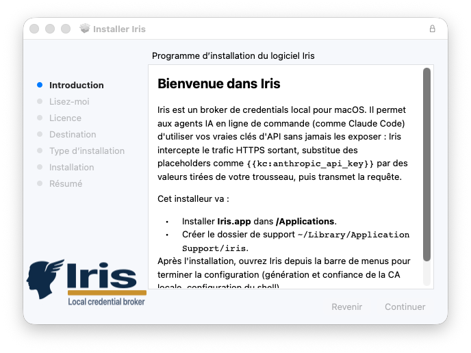
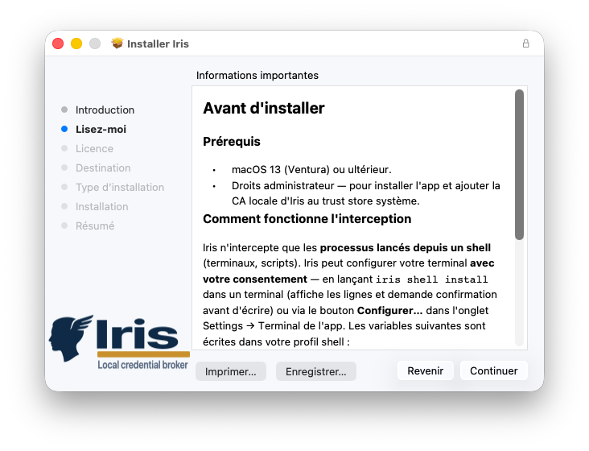
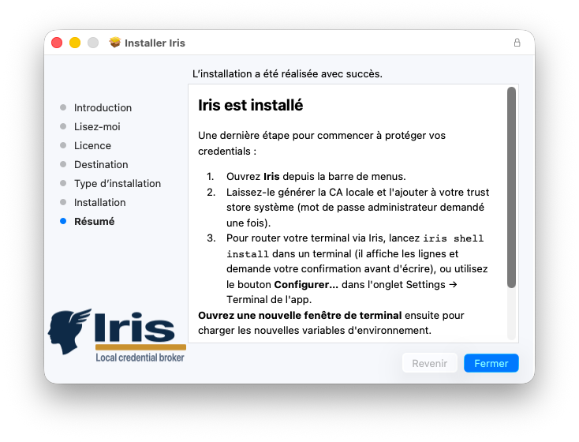
Méthode 2 — Build depuis les sources
Method 2 — Build from source
Pour les développeurs, ou en attendant le .pkg.
For developers, or while waiting for the .pkg.
# Cloner et compiler
git clone https://github.com/Sandjab/iris.git
cd iris
swift build -c release
# Lancer le daemon en foreground (pour debug)
.build/release/irisd --foreground
# La CLI dans un autre terminal
.build/release/iris status# Clone and build
git clone https://github.com/Sandjab/iris.git
cd iris
swift build -c release
# Run the daemon in foreground (for debugging)
.build/release/irisd --foreground
# The CLI in another terminal
.build/release/iris statusUn binaire compilé localement n'est pas signé. L'ACL Keychain qui restreint l'accès aux secrets à irisd signé uniquement ne s'appliquera donc pas — vous verrez les prompts macOS à chaque accès. Réservez ce mode au développement.
A locally compiled binary is not signed. The Keychain ACL that restricts secret access to signed irisd only therefore won't apply — you'll see the macOS prompts on every access. Keep this mode for development.
9Configuration shellShell configuration¶
IRIS s'active par injection de deux variables d'environnement dans votre profil shell : le proxy
(HTTPS_PROXY) et le certificat de la CA pour Node.js
(NODE_EXTRA_CA_CERTS). Les outils qui en héritent passeront par le proxy.
IRIS is activated by injecting two environment variables into your shell profile: the proxy
(HTTPS_PROXY) and the CA certificate for Node.js
(NODE_EXTRA_CA_CERTS). Tools that inherit them will go through the proxy.
Méthode recommandée (zsh)
Recommended method (zsh)
La CLI gère le bloc pour vous : un bloc balisé et idempotent ajouté à ~/.zshrc entre
des marqueurs # >>> iris >>> … # <<< iris <<<.
The CLI manages the block for you: a marked, idempotent block added to ~/.zshrc between
# >>> iris >>> … # <<< iris <<< markers.
# Affiche le bloc puis demande confirmation
iris shell install
# Sans confirmation (scripting)
iris shell install --yes
# État / retrait propre du bloc
iris shell status
iris shell uninstall# Show the block then ask for confirmation
iris shell install
# Without confirmation (scripting)
iris shell install --yes
# Status / clean removal of the block
iris shell status
iris shell uninstallL'application expose la même action dans l'onglet Settings → Terminal (Configure… / Remove…).
The app exposes the same action in the Settings → Terminal tab (Configure… / Remove…).
Configuration manuelle
Manual configuration
Si vous gérez votre profil à la main, ajoutez exactement ces deux variables (plus vos placeholders) :
If you manage your profile by hand, add exactly these two variables (plus your placeholders):
# Ajouter à ~/.zshrc
export HTTPS_PROXY="http://127.0.0.1:8888"
export NODE_EXTRA_CA_CERTS="$HOME/Library/Application Support/iris/ca.pem"
# Vos placeholders
export ANTHROPIC_API_KEY="{{kc:anthropic_api_key}}"
export GITHUB_TOKEN="{{kc:github_token}}"
# Recharger
source ~/.zshrc# Add to ~/.zshrc
export HTTPS_PROXY="http://127.0.0.1:8888"
export NODE_EXTRA_CA_CERTS="$HOME/Library/Application Support/iris/ca.pem"
# Your placeholders
export ANTHROPIC_API_KEY="{{kc:anthropic_api_key}}"
export GITHUB_TOKEN="{{kc:github_token}}"
# Reload
source ~/.zshrc# Ajouter à ~/.bashrc ou ~/.bash_profile
export HTTPS_PROXY="http://127.0.0.1:8888"
export NODE_EXTRA_CA_CERTS="$HOME/Library/Application Support/iris/ca.pem"
export ANTHROPIC_API_KEY="{{kc:anthropic_api_key}}"
export GITHUB_TOKEN="{{kc:github_token}}"
source ~/.bashrc# Add to ~/.bashrc or ~/.bash_profile
export HTTPS_PROXY="http://127.0.0.1:8888"
export NODE_EXTRA_CA_CERTS="$HOME/Library/Application Support/iris/ca.pem"
export ANTHROPIC_API_KEY="{{kc:anthropic_api_key}}"
export GITHUB_TOKEN="{{kc:github_token}}"
source ~/.bashrc# Ajouter à ~/.config/fish/config.fish
set -gx HTTPS_PROXY "http://127.0.0.1:8888"
set -gx NODE_EXTRA_CA_CERTS "$HOME/Library/Application Support/iris/ca.pem"
set -gx ANTHROPIC_API_KEY "{{kc:anthropic_api_key}}"
set -gx GITHUB_TOKEN "{{kc:github_token}}"
source ~/.config/fish/config.fish# Add to ~/.config/fish/config.fish
set -gx HTTPS_PROXY "http://127.0.0.1:8888"
set -gx NODE_EXTRA_CA_CERTS "$HOME/Library/Application Support/iris/ca.pem"
set -gx ANTHROPIC_API_KEY "{{kc:anthropic_api_key}}"
set -gx GITHUB_TOKEN "{{kc:github_token}}"
source ~/.config/fish/config.fishPourquoi pas SSL_CERT_FILE / CURL_CA_BUNDLE ?
Ces variables remplacent tout le bundle CA pour OpenSSL/LibreSSL au lieu d'ajouter
le cert IRIS. Les pointer sur le seul ca.pem casserait la validation TLS pour tous
les domaines non-whitelistés. Préférez iris ca install qui ajoute le CA au trust
store de l'utilisateur — les outils qui consultent le trust store macOS le respectent automatiquement.
Why not SSL_CERT_FILE / CURL_CA_BUNDLE?
These variables replace the entire CA bundle for OpenSSL/LibreSSL instead of adding
the IRIS cert. Pointing them at ca.pem alone would break TLS validation for every
non-whitelisted domain. Prefer iris ca install, which adds the CA to the user's trust
store — tools that consult the macOS trust store respect it automatically.
HTTPS_PROXY ne s'applique qu'aux processus lancés depuis un shell (terminal,
scripts). Les apps GUI lancées depuis le Finder, le Dock ou Spotlight ne sont pas
interceptées — c'est intentionnel (objectif G8). Pour intercepter une app GUI ponctuellement,
lancez-la depuis un terminal : open -a Slack n'hérite pas du proxy, mais
/Applications/Slack.app/Contents/MacOS/Slack oui.
HTTPS_PROXY only applies to processes launched from a shell (terminal,
scripts). GUI apps launched from Finder, the Dock, or Spotlight are not
intercepted — that's intentional (goal G8). To intercept a GUI app occasionally,
launch it from a terminal: open -a Slack does not inherit the proxy, but
/Applications/Slack.app/Contents/MacOS/Slack does.
10Fichier config.jsonThe config.json file¶
Le daemon lit sa configuration depuis ~/Library/Application Support/iris/config.json au
démarrage, et recharge sur SIGHUP (ou iris config reload). Aucun secret n'est
stocké dans ce fichier — uniquement la configuration opérationnelle et la whitelist MITM. Il est créé
automatiquement au premier démarrage et fait foi. Modifiez-le de préférence via
iris config set ou l'onglet Settings de l'app (qui valident la saisie et gardent
des sauvegardes), plutôt qu'à la main.
The daemon reads its configuration from ~/Library/Application Support/iris/config.json at
startup, and reloads on SIGHUP (or iris config reload). No secret is stored
in this file — only the operational configuration and the MITM whitelist. It is created automatically
on first start and is authoritative. Prefer editing it via
iris config set or the app's Settings tab (which validate input and keep
backups), rather than by hand.
{
"version": 1,
"broker": {
"listen": "127.0.0.1:8888",
"events_listen": "127.0.0.1:8899",
"admin_socket": "~/Library/Application Support/iris/admin.sock",
"log_level": "info",
"event_retention_days": 7,
"event_ring_size": 10000
},
"security": {
"on_exfil_attempt": "block_and_notify",
"max_substitutions_per_minute": 60
},
"backups": {
"max_count": 10
},
"hosts": [
{ "host": "api.anthropic.com", "origin": "default" }
]
}Sections
Sections
broker
| Clé | Type | Défaut | Effet |
|---|---|---|---|
listen | string | 127.0.0.1:8888 | Adresse:port du proxy MITM. Toujours sur localhost. |
events_listen | string | 127.0.0.1:8899 | Adresse:port du serveur SSE d'events. |
admin_socket | path | ~/.../admin.sock | Socket Unix admin. Mode 0600 enforcé au bind. |
log_level | enum | info | trace, debug, info, warn, error. |
event_retention_days | int | 7 | TTL des events dans SQLite. Compaction quotidienne. |
event_ring_size | int | 10000 | Taille du ring buffer en mémoire (live view). |
| Key | Type | Default | Effect |
|---|---|---|---|
listen | string | 127.0.0.1:8888 | MITM proxy address:port. Always on localhost. |
events_listen | string | 127.0.0.1:8899 | Address:port of the SSE events server. |
admin_socket | path | ~/.../admin.sock | Admin Unix socket. Mode 0600 enforced at bind. |
log_level | enum | info | trace, debug, info, warn, error. |
event_retention_days | int | 7 | Event TTL in SQLite. Daily compaction. |
event_ring_size | int | 10000 | In-memory ring buffer size (live view). |
security
| Clé | Type | Défaut | Effet |
|---|---|---|---|
on_exfil_attempt | enum | block_and_notify | block_only, block_and_notify, block_notify_pause. Voir chapitre 6. |
max_substitutions_per_minute | int | 60 | Seuil R5 par secret. |
| Key | Type | Default | Effect |
|---|---|---|---|
on_exfil_attempt | enum | block_and_notify | block_only, block_and_notify, block_notify_pause. See chapter 6. |
max_substitutions_per_minute | int | 60 | R5 threshold per secret. |
backups
| Clé | Type | Défaut | Effet |
|---|---|---|---|
max_count | int | 10 | Nombre de sauvegardes horodatées de config.json conservées à chaque écriture. |
| Key | Type | Default | Effect |
|---|---|---|---|
max_count | int | 10 | Number of timestamped config.json backups kept on each write. |
hosts
Tableau de la whitelist MITM. Chaque entrée déclare un host qu'IRIS accepte de déchiffrer, avec son
origin : default (host protégé fourni par IRIS, non supprimable via CLI) ou
user (ajouté par l'utilisateur). Match exact, case-insensitive, pas de wildcard. Gérez la
whitelist via iris rule ou l'onglet Rules de l'app plutôt qu'à la main.
The MITM whitelist array. Each entry declares a host IRIS agrees to decrypt, with its
origin: default (a protected host shipped by IRIS, not removable via the CLI) or
user (added by the user). Exact, case-insensitive match, no wildcard. Manage the
whitelist via iris rule or the app's Rules tab rather than by hand.
11CA & trust storeCA & trust store¶
La CA locale est générée automatiquement au premier démarrage du daemon : paire ECDSA P-256, clé
privée dans le Keychain (service io.iris.ca, compte privatekey, protégée par
une ACL liée au binaire irisd signé — cf. chapitre 5), cert public exporté en PEM sur
~/Library/Application Support/iris/ca.pem.
The local CA is generated automatically on the daemon's first start: an ECDSA P-256 pair, the private
key in the Keychain (service io.iris.ca, account privatekey, protected by an
ACL bound to the signed irisd binary — see chapter 5), the public cert exported as PEM to
~/Library/Application Support/iris/ca.pem.
Vérifier la CA
Verify the CA
# Empreinte SHA-256 de la CA
iris ca fingerprint
# Chemin du PEM (--print pour le contenu, --path <dest> pour le copier)
iris ca export
# Vérifier que la CA est dans le trust store de l'utilisateur
iris ca is-trusted# SHA-256 fingerprint of the CA
iris ca fingerprint
# PEM path (--print for the content, --path <dest> to copy it)
iris ca export
# Check the CA is in the user's trust store
iris ca is-trustedInstaller la CA dans le trust store
Install the CA into the trust store
# Ajoute la CA au trust store de l'utilisateur (prompt admin une seule fois).
# Couvre OpenSSL, LibreSSL, Safari, gh, git, curl…
iris ca install
# La retirer du trust store
iris ca uninstall# Adds the CA to the user's trust store (admin prompt once).
# Covers OpenSSL, LibreSSL, Safari, gh, git, curl…
iris ca install
# Remove it from the trust store
iris ca uninstallL'installation au trust store de l'utilisateur nécessite une authentification une seule fois. Après ça, tous les outils utilisant le trust store macOS acceptent silencieusement les certs leaf mintés par IRIS pour les hosts whitelistés.
Installing into the user's trust store requires authentication once. After that, all tools using the macOS trust store silently accept the leaf certs minted by IRIS for whitelisted hosts.
Node.js ne lit pas le trust store macOS — d'où la nécessité de
NODE_EXTRA_CA_CERTS dans le shell.
Node.js does not read the macOS trust store — hence the need for
NODE_EXTRA_CA_CERTS in the shell.
Certificats leaf
Leaf certificates
Pour chaque host whitelisté, le daemon mint un cert leaf à la volée (CN = host, SAN includes host,
validité 90 jours), signé par la CA. Le cert est gardé en cache mémoire ; aucune persistance disque.
La clé privée de la CA n'est jamais extraite : les opérations de signature passent
par SecKeyCreateSignature qui garde la clé dans le Keychain.
For each whitelisted host, the daemon mints a leaf cert on the fly (CN = host, SAN includes host,
90-day validity), signed by the CA. The cert is kept in a memory cache; no disk persistence.
The CA private key is never extracted: signing operations go through
SecKeyCreateSignature, which keeps the key in the Keychain.
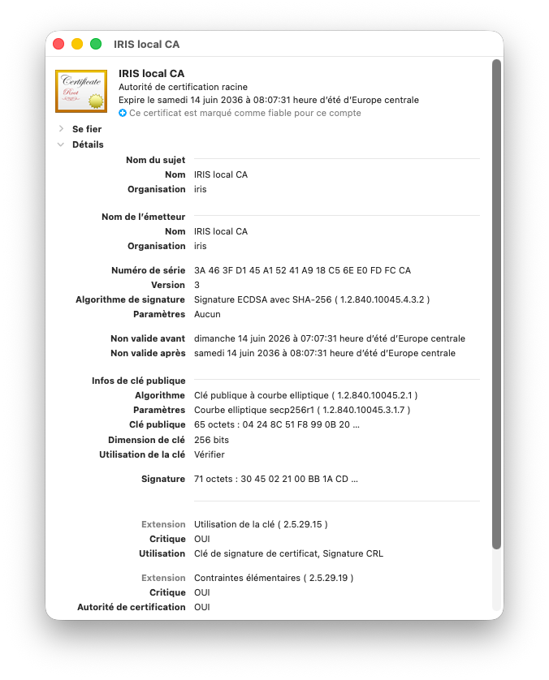
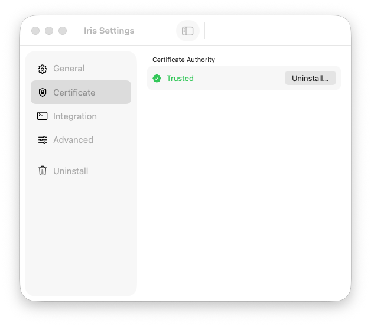
12CLI — vue d'ensembleCLI — overview¶
La CLI iris est l'interface complète vers le daemon. Toutes les opérations transitent
par la socket Unix admin (mode 0600) en JSON-RPC 2.0. Tant que la socket existe et que
les permissions sont bonnes, n'importe quel binaire peut piloter le daemon — la sécurité repose sur
les permissions FS.
The iris CLI is the complete interface to the daemon. All operations go through the admin
Unix socket (mode 0600) over JSON-RPC 2.0. As long as the socket exists and the permissions
are right, any binary can drive the daemon — security rests on FS permissions.
Sous-commandes
Sub-commands
| Groupe | Sous-commandes | Couverture |
|---|---|---|
iris secret | add, list, show, edit, rotate, rm, quarantine, unquarantine | Gestion des secrets |
iris rule | add, list, rm | Whitelist des hosts MITM |
iris ca | export, fingerprint, is-trusted, install, uninstall | Gestion de la CA locale |
iris config | get, set, reload | Inspection / modification de config.json |
iris shell | install, uninstall, status | Bloc d'environnement dans ~/.zshrc |
iris mcp | wrap, unwrap | Patch automatique des fichiers MCP |
iris status | — | État du daemon, stats temps réel |
iris logs | --follow, --kind, --host, --since | Events historiques ou stream live |
iris doctor | — | Diagnostic complet de l'installation |
iris pause / resume | — | Pause temporaire des substitutions |
| Group | Sub-commands | Coverage |
|---|---|---|
iris secret | add, list, show, edit, rotate, rm, quarantine, unquarantine | Secret management |
iris rule | add, list, rm | MITM host whitelist |
iris ca | export, fingerprint, is-trusted, install, uninstall | Local CA management |
iris config | get, set, reload | Inspect / modify config.json |
iris shell | install, uninstall, status | Environment block in ~/.zshrc |
iris mcp | wrap, unwrap | Automatic patching of MCP files |
iris status | — | Daemon state, real-time stats |
iris logs | --follow, --kind, --host, --since | Historical events or live stream |
iris doctor | — | Full installation diagnostics |
iris pause / resume | — | Temporary pause of substitutions |
Flags globaux
Global flags
--json— sortie JSON sur les commandes de lecture (idempotent pour scripting).--helpsur n'importe quelle sous-commande pour l'usage détaillé.
--json— JSON output on read commands (idempotent for scripting).--helpon any sub-command for detailed usage.
Codes de sortie
Exit codes
| Code | Signification |
|---|---|
0 | Succès |
1 | Erreur générique (validation, payload) |
2 | Daemon injoignable (socket absente ou refus de connexion) |
3 | Erreur d'I/O (lecture fichier, backup, etc.) |
| Code | Meaning |
|---|---|
0 | Success |
1 | Generic error (validation, payload) |
2 | Daemon unreachable (socket missing or connection refused) |
3 | I/O error (file read, backup, etc.) |
13Gérer les secretsManage secrets¶
Ajouter un secret
Add a secret
# Interactif (valeur masquée à la saisie)
iris secret add anthropic_api_key --allowed-hosts api.anthropic.com
# Depuis stdin (scripting, CI)
echo "sk-ant-api03-XXX" | iris secret add anthropic_api_key \
--allowed-hosts api.anthropic.com --value-from-stdin
# Multi-hosts
iris secret add github_token \
--allowed-hosts api.github.com,uploads.github.com,raw.githubusercontent.com# Interactive (value masked on input)
iris secret add anthropic_api_key --allowed-hosts api.anthropic.com
# From stdin (scripting, CI)
echo "sk-ant-api03-XXX" | iris secret add anthropic_api_key \
--allowed-hosts api.anthropic.com --value-from-stdin
# Multi-host
iris secret add github_token \
--allowed-hosts api.github.com,uploads.github.com,raw.githubusercontent.comL'option --value <v> existe pour le scripting mais imprime un warning sur stderr —
elle expose le secret dans l'historique shell. Préférez --value-from-stdin.
The --value <v> option exists for scripting but prints a warning on stderr —
it exposes the secret in the shell history. Prefer --value-from-stdin.
Conventions de nommage
Naming conventions
- Nom : regex
^[a-zA-Z0-9_-]{1,64}$. Snake_case recommandé. allowed_hosts: noms DNS valides séparés par virgule. Pas de wildcard en MVP. Pas de port.
- Name: regex
^[a-zA-Z0-9_-]{1,64}$. Snake_case recommended. allowed_hosts: valid DNS names separated by commas. No wildcard in the MVP. No port.
Lister
List
iris secret list
# NAME STATUS CREATED LAST_USED USES HOSTS
# anthropic_api_key active 2 days ago 2 min ago 1247 api.anthropic.com
# github_token active 2 days ago 1 day ago 18 api.github.com,uploads.github.com
# openai_api_key active 5 days ago - 0 api.openai.com
iris secret list --json
# [
# {"name":"anthropic_api_key","allowed_hosts":["api.anthropic.com"],"last_used_at":"…"},
# …
# ]Aucune commande IRIS — ni CLI ni RPC — ne révèle la valeur d'un secret en clair.
iris secret show retourne uniquement les métadonnées (nom, allowed_hosts, dates, usage).
C'est l'invariant I2.
No IRIS command — neither CLI nor RPC — reveals a secret's cleartext value.
iris secret show returns only metadata (name, allowed_hosts, dates, usage).
This is invariant I2.
Détail d'un secret
Secret details
iris secret show anthropic_api_key
# name: anthropic_api_key
# allowed_hosts: api.anthropic.com
# created_at: 2026-04-12 14:30:01
# last_used_at: 2026-05-27 09:42:18
# usage_count: 1247Modifier les allowed_hosts
Edit allowed_hosts
iris secret edit github_token \
--allowed-hosts api.github.com,uploads.github.com,raw.githubusercontent.comRotation
Rotation
iris secret rotate anthropic_api_key
# Prompte pour la nouvelle valeur (ou lit stdin). Préserve l'ACL Keychain existante.iris secret rotate anthropic_api_key
# Prompts for the new value (or reads stdin). Preserves the existing Keychain ACL.Quarantaine
Quarantine
# Désactive la substitution d'un secret sans le supprimer (réversible). Le secret
# reste en Keychain ; ses placeholders passent littéralement jusqu'à réactivation.
iris secret quarantine anthropic_api_key
# Réactiver la substitution
iris secret unquarantine anthropic_api_key# Disables a secret's substitution without deleting it (reversible). The secret
# stays in the Keychain; its placeholders pass through literally until reactivation.
iris secret quarantine anthropic_api_key
# Re-enable substitution
iris secret unquarantine anthropic_api_keySuppression
Deletion
iris secret rm openai_api_key
# Demande une confirmation interactive (y/N). En contexte non-interactif (script),
# ajoutez --yes — sinon la commande attend une réponse et se bloque.
iris secret rm openai_api_key --yesiris secret rm openai_api_key
# Asks for interactive confirmation (y/N). In a non-interactive context (script),
# add --yes — otherwise the command waits for an answer and blocks.
iris secret rm openai_api_key --yes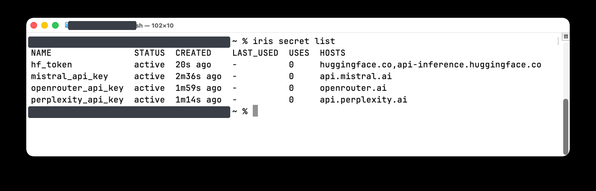
14Whitelist MITMMITM whitelist¶
La whitelist contrôle quels hosts IRIS accepte de déchiffrer. Tout host absent est traité en CONNECT-tunnel transparent, donc aucune substitution n'est possible — sécurité par défaut.
The whitelist controls which hosts IRIS agrees to decrypt. Any absent host is handled as a transparent CONNECT tunnel, so no substitution is possible — secure by default.
Ajouter un host à la whitelist signifie qu'IRIS pourra potentiellement substituer des secrets
dans les requêtes qui y vont. Cela n'est dangereux que si vous avez des secrets dont
allowed_hosts contient des hosts que vous ne contrôlez pas. Le scoping est votre garde-fou —
n'autorisez un secret que sur les hosts strictement nécessaires.
Adding a host to the whitelist means IRIS may potentially substitute secrets
in requests that go there. This is only dangerous if you have secrets whose
allowed_hosts contains hosts you don't control. Scoping is your safeguard —
only authorize a secret on the strictly necessary hosts.
Lister
List
iris rule list
# HOST ORIGIN CREATED
# api.anthropic.com default 2026-06-10T19:34:42Z
# api.stripe.com user 2026-06-11T08:12:55ZAjouter
Add
iris rule add api.stripe.comSupprimer
Remove
iris rule rm api.openai.comLes modifications de whitelist via CLI mettent à jour config.json et sont prises en
compte immédiatement. Les hosts default ne sont pas supprimables via la CLI ; seuls les
hosts user le sont.
Whitelist changes via the CLI update config.json and take effect
immediately. default hosts are not removable via the CLI; only user
hosts are.
15Monitoring & logsMonitoring & logs¶
État du daemon
Daemon state
iris status
# pid=62305 uptime=19m1s version=1.0.0 req=142 sub=138 exfil=1 err=0
iris status --json
# {"pid":62305,"uptime_s":1141,"version":"1.0.0","paused":false,"stats":{…}}Les compteurs (req, sub, exfil, err) sont cumulés
depuis le démarrage du daemon. paused=true indique une pause active
(iris pause).
The counters (req, sub, exfil, err) are cumulative
since the daemon started. paused=true indicates an active pause
(iris pause).
Logs historiques
Historical logs
# Derniers events
iris logs
# Filtre par kind (substituted, passThrough, noMatch, exfilBlocked, error, systemAlert)
iris logs --kind exfilBlocked
# Plusieurs kinds + host
iris logs --kind substituted,exfilBlocked --host api.anthropic.com
# Plage de temps (ISO 8601 ou relatif : 5m, 1h, 1d) et nombre max
iris logs --since 1h --limit 100
# JSON pour piper
iris logs --json --kind substituted | jq '.[].dur_ms'# Latest events
iris logs
# Filter by kind (substituted, passThrough, noMatch, exfilBlocked, error, systemAlert)
iris logs --kind exfilBlocked
# Several kinds + host
iris logs --kind substituted,exfilBlocked --host api.anthropic.com
# Time range (ISO 8601 or relative: 5m, 1h, 1d) and a max count
iris logs --since 1h --limit 100
# JSON to pipe
iris logs --json --kind substituted | jq '.[].dur_ms'Stream temps réel
Real-time stream
# Tail style, SSE en arrière-plan
iris logs --follow
# Avec filtre
iris logs --follow --filter "kind=exfilBlocked"# Tail style, SSE in the background
iris logs --follow
# With a filter
iris logs --follow --filter "kind=exfilBlocked"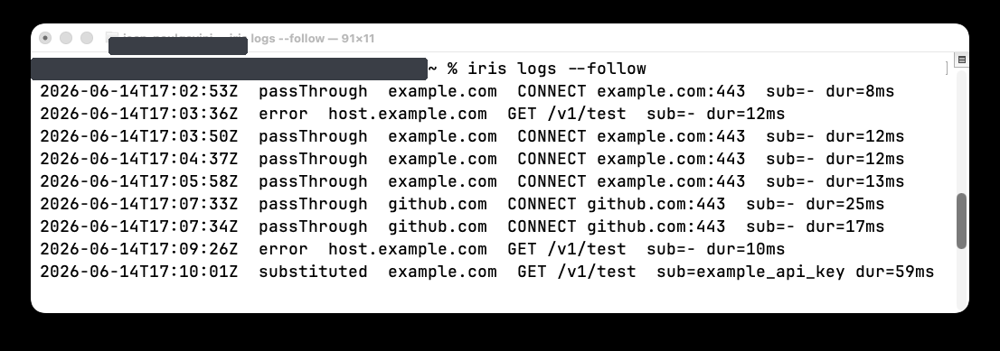
Format d'un event
Event format
2026-05-27 09:42:18 substituted POST api.anthropic.com /v1/messages
status=200 8.4s secret=anthropic_api_key
2026-05-27 09:43:02 exfilBlocked POST api.github.com /repos/foo/bar/issues
ALERT[high] rule=hostMismatch secret=anthropic_api_key
location=body snippet="…ANTHROPIC_API_KEY={{kc:anthrop…"16Wrapping MCPMCP wrapping¶
Les serveurs MCP (Model Context Protocol) consomment leurs credentials via un fichier de config JSON
(.mcp.json, ~/.claude.json) plutôt que via l'env shell. La sous-commande
iris mcp wrap patche automatiquement ces fichiers : elle ajoute les bonnes variables
d'environnement (HTTPS_PROXY, NODE_EXTRA_CA_CERTS…) au bloc env
de chaque serveur MCP.
MCP (Model Context Protocol) servers consume their credentials via a JSON config file
(.mcp.json, ~/.claude.json) rather than the shell env. The
iris mcp wrap sub-command patches these files automatically: it adds the right environment
variables (HTTPS_PROXY, NODE_EXTRA_CA_CERTS…) to each MCP server's
env block.
Patcher un fichier
Patch a file
# In place, avec backup automatique en .iris.bak
iris mcp wrap ~/.claude.json
# Dry-run : affiche le diff sans modifier
iris mcp wrap ~/.claude.json --dry-run
# Watch : re-patche automatiquement quand Claude Code réécrit le fichier
iris mcp wrap ~/.claude.json --watch
# Revert depuis le .iris.bak
iris mcp unwrap ~/.claude.json# In place, with an automatic .iris.bak backup
iris mcp wrap ~/.claude.json
# Dry-run: shows the diff without modifying
iris mcp wrap ~/.claude.json --dry-run
# Watch: automatically re-patches when Claude Code rewrites the file
iris mcp wrap ~/.claude.json --watch
# Revert from the .iris.bak
iris mcp unwrap ~/.claude.jsonComportement
Behavior
Pour chaque serveur MCP, IRIS s'assure que le bloc env contient :
For each MCP server, IRIS ensures the env block contains:
HTTPS_PROXY = http://<config.broker.listen>
HTTP_PROXY = idem
NODE_EXTRA_CA_CERTS = chemin absolu vers ca.pem
SSL_CERT_FILE = idem
CURL_CA_BUNDLE = idem
REQUESTS_CA_BUNDLE = idemHTTPS_PROXY = http://<config.broker.listen>
HTTP_PROXY = same
NODE_EXTRA_CA_CERTS = absolute path to ca.pem
SSL_CERT_FILE = same
CURL_CA_BUNDLE = same
REQUESTS_CA_BUNDLE = sameGaranties
Guarantees
- Idempotent : un second
wrapne change rien. - Préservation : si vous avez déjà une de ces 6 variables, IRIS ne l'écrase pas.
- Transports HTTP/SSE : les serveurs MCP de type
httpoussesans blocenvne sont pas modifiés (ils héritent de l'env parent). - Placeholders existants : les valeurs qui matchent
^\{\{kc:…\}\}$ne sont jamais touchées. - JSONC supporté : commentaires
// …et trailing commas tolérés. - Backup atomique :
.iris.bakécrit avant toute modification. - Validation : le résultat est re-parsé avant écriture.
- Idempotent: a second
wrapchanges nothing. - Preservation: if you already have one of these 6 variables, IRIS does not overwrite it.
- HTTP/SSE transports: MCP servers of type
httporssewithout anenvblock are left untouched (they inherit the parent env). - Existing placeholders: values matching
^\{\{kc:…\}\}$are never touched. - JSONC supported:
// …comments and trailing commas tolerated. - Atomic backup:
.iris.bakwritten before any modification. - Validation: the result is re-parsed before writing.
Exemple
Example
{
"mcpServers": {
"github": {
"command": "github-mcp",
"env": {
"GITHUB_TOKEN": "ghp_RAW_TOKEN_HERE"
}
}
}
}{
"mcpServers": {
"github": {
"command": "github-mcp",
"env": {
"GITHUB_TOKEN": "ghp_RAW_TOKEN_HERE",
"HTTPS_PROXY": "http://127.0.0.1:8888",
"HTTP_PROXY": "http://127.0.0.1:8888",
"NODE_EXTRA_CA_CERTS": "/Users/you/Library/Application Support/iris/ca.pem",
"SSL_CERT_FILE": "/Users/you/Library/Application Support/iris/ca.pem",
"CURL_CA_BUNDLE": "/Users/you/Library/Application Support/iris/ca.pem",
"REQUESTS_CA_BUNDLE": "/Users/you/Library/Application Support/iris/ca.pem"
}
}
}
}Notez que wrap ne convertit pas les valeurs en clair en placeholders.
C'est intentionnel : remplacer ghp_… par {{kc:github_token}} exigerait
de lire un secret en clair puis le supprimer, opération risquée. Workflow recommandé :
(1) iris secret add github_token --value-from-stdin ; (2) éditer manuellement
le JSON pour remplacer la valeur par {{kc:github_token}} ; (3) iris mcp wrap.
Note that wrap does not convert cleartext values into placeholders.
That's intentional: replacing ghp_… with {{kc:github_token}} would require
reading a secret in cleartext then deleting it, a risky operation. Recommended workflow:
(1) iris secret add github_token --value-from-stdin; (2) manually edit
the JSON to replace the value with {{kc:github_token}}; (3) iris mcp wrap.
Fichiers couverts
Covered files
~/.claude.json— config utilisateur de Claude Code<projet>/.mcp.json— config projet MCP~/Library/Application Support/Claude/claude_desktop_config.json— Claude Desktop (bonus)- Tout JSON avec une clé
mcpServersà la racine ou imbriquée d'un niveau
~/.claude.json— Claude Code user config<project>/.mcp.json— MCP project config~/Library/Application Support/Claude/claude_desktop_config.json— Claude Desktop (bonus)- Any JSON with an
mcpServerskey at the root or nested one level deep
17Pause, Resume, DoctorPause, Resume, Doctor¶
Pause / Resume
Pause / Resume
iris pause
# Le daemon arrête toute substitution. Les placeholders passent littéralement
# vers les upstreams (qui retourneront 401). Utile pour tester un outil hors IRIS.
iris resume
# Reprend les substitutions.iris pause
# The daemon stops all substitution. Placeholders pass through literally
# to the upstreams (which will return 401). Useful to test a tool without IRIS.
iris resume
# Resumes substitutions.Doctor — diagnostic complet
Doctor — full diagnostics
iris doctorVérifications effectuées :
Checks performed:
admin-socket-present— socket admin présente au chemin attendu.daemon-alive— daemon joignable (PID, uptime).ca-cert-present— PEM de la CA présent.ca-trusted-system— CA dans le trust store de l'utilisateur.shell-env-vars—HTTPS_PROXYetNODE_EXTRA_CA_CERTSprésents dans le shell courant.proxy-ping— ping interne sur le port proxy.claude-apikeyhelper-absent— pas d'apiKeyHelperdans~/.claude/settings.json(incompatible).
admin-socket-present— admin socket present at the expected path.daemon-alive— daemon reachable (PID, uptime).ca-cert-present— CA PEM present.ca-trusted-system— CA in the user's trust store.shell-env-vars—HTTPS_PROXYandNODE_EXTRA_CA_CERTSpresent in the current shell.proxy-ping— internal ping on the proxy port.claude-apikeyhelper-absent— noapiKeyHelperin~/.claude/settings.json(incompatible).
# Sortie nominale
[ok] admin-socket-present — ~/Library/Application Support/iris/admin.sock
[ok] daemon-alive — pid=62305 uptime=19m
[ok] ca-cert-present — ~/Library/Application Support/iris/ca.pem
[ok] ca-trusted-system — in user trust store
[ok] shell-env-vars — HTTPS_PROXY, NODE_EXTRA_CA_CERTS
[ok] proxy-ping — 200 ok
[ok] claude-apikeyhelper-absent — not set# Nominal output
[ok] admin-socket-present — ~/Library/Application Support/iris/admin.sock
[ok] daemon-alive — pid=62305 uptime=19m
[ok] ca-cert-present — ~/Library/Application Support/iris/ca.pem
[ok] ca-trusted-system — in user trust store
[ok] shell-env-vars — HTTPS_PROXY, NODE_EXTRA_CA_CERTS
[ok] proxy-ping — 200 ok
[ok] claude-apikeyhelper-absent — not set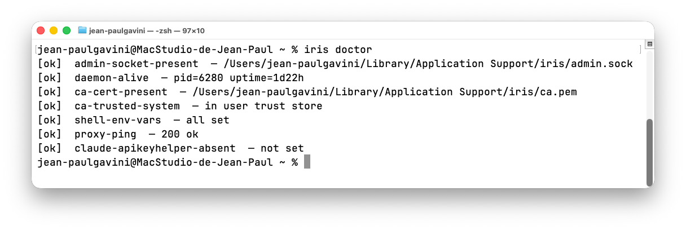
18L'application menu-barThe menu bar app¶
Iris.app est une application de barre de menus (pas d'icône dans le Dock).
Elle pilote le même daemon que la CLI via la socket admin — tout ce qui suit a un équivalent en ligne
de commande (Partie III). Un clic sur l'icône ouvre un panneau flottant, déplaçable et
redimensionnable : vous pouvez le détacher et le laisser ouvert pendant que vous travaillez.
Iris.app is a menu bar app (no Dock icon).
It drives the same daemon as the CLI through the admin socket — everything below has a command-line
equivalent (Part III). Clicking the icon opens a floating, draggable, resizable panel:
you can detach it and leave it open while you work.
L'icône dans la barre de menus
The menu bar icon
L'icône signale l'état du daemon d'un coup d'œil. Conformément aux règles macOS pour les menu bar extras (monochrome, noir + transparent), c'est la forme qui porte l'information — jamais la couleur ; macOS la teinte automatiquement selon le thème clair ou sombre.
The icon signals the daemon's state at a glance. Per the macOS rules for menu bar extras (monochrome, black + transparent), it's the shape that carries the information — never color; macOS tints it automatically for the light or dark theme.
IRIS propose deux jeux d'icônes interchangeables dans Réglages › General › Appearance : la tête ailée (par défaut) et la clé. Le tableau ci-dessous montre la tête ailée ; la clé équivalente figure .
IRIS offers two interchangeable icon sets in Settings › General › Appearance: the winged head (default) and the key. The table below shows the winged head; the equivalent key appears .
| IcôneIcon | ÉtatState | SignificationMeaning |
|---|---|---|
(  ) ) |
active | Daemon actif, substitution en cours.Daemon active, substitution in progress. |
(  ) ) |
en pausepaused | Substitution suspendue (iris pause).Substitution suspended (iris pause). |
(  ) ) |
arrêtéstopped | Daemon arrêté ou en erreur.Daemon stopped or in error. |
(  ) ) |
connexionconnecting | Connexion au daemon en cours — icône atténuée.Connecting to the daemon — dimmed icon. |
Un badge (compteur) s'ajoute à côté de l'icône lorsqu'une ou plusieurs alertes de sécurité non lues attendent dans l'onglet Security.
A badge (counter) appears next to the icon when one or more unread security alerts are waiting in the Security tab.
En-tête du panneau
Panel header
En permanence en haut du panneau : une pastille d'état du daemon (verte = actif, orange = en pause, rouge = arrêté, grise = connexion en cours) — c'est sur cette pastille que vit la couleur de l'état, distincte de l'icône monochrome de la barre de menus. À côté : l'uptime et un bouton Pause / Resume. Des bandeaux apparaissent au besoin : daemon injoignable, ou notifications système désactivées.
Always at the top of the panel: a daemon status dot (green = active, orange = paused, red = stopped, gray = connecting) — this dot is where the state's color lives, distinct from the monochrome menu bar icon. Next to it: the uptime and a Pause / Resume button. Banners appear when needed: daemon unreachable, or system notifications disabled.
Les six onglets
The six tabs
| Onglet | Rôle | Équivalent CLI |
|---|---|---|
| Overview | Compteurs depuis le démarrage du daemon (Requests, Substituted, Blocked, Errors) et les 5 derniers events. | iris status |
| Logs | Flux d'events en direct avec recherche, filtre par host, filtre par type, et bouton pour figer le flux. | iris logs --follow |
| Security | Alertes (exfiltration + alertes système) triées par sévérité, compteur de non-lues, « Mark all read », action « quarantaine » sur le secret concerné. | iris logs --kind exfilBlocked |
| Secrets | Liste des secrets avec hosts et métadonnées ; ajout, édition des hosts, rotation, quarantaine, suppression. | iris secret … |
| Rules | Whitelist MITM : ajout d'un host, suppression des hosts user (les default sont protégés). | iris rule … |
| Settings | Configuration, CA, terminal, démarrage automatique, désinstallation (ci-dessous). | iris config … |
| Tab | Role | CLI equivalent |
|---|---|---|
| Overview | Counters since the daemon started (Requests, Substituted, Blocked, Errors) and the 5 most recent events. | iris status |
| Logs | Live event stream with search, host filter, type filter, and a button to freeze the stream. | iris logs --follow |
| Security | Alerts (exfiltration + system alerts) sorted by severity, an unread counter, "Mark all read", and a "quarantine" action on the affected secret. | iris logs --kind exfilBlocked |
| Secrets | List of secrets with hosts and metadata; add, edit hosts, rotate, quarantine, delete. | iris secret … |
| Rules | MITM whitelist: add a host, remove user hosts (default ones are protected). | iris rule … |
| Settings | Configuration, CA, terminal, auto-start, uninstall (below). | iris config … |
Onglet Secrets
Secrets tab
Chaque secret affiche son nom, ses allowed_hosts (sous forme de puces) et la ligne
« créé · dernière utilisation · N usages ». Un secret en quarantaine apparaît en rouge italique avec un
badge QUARANTINED. Les actions par secret : quarantaine, édition des hosts, rotation,
suppression (avec confirmation). Le bouton Add ouvre un formulaire en place — nom, valeur
(champ masqué), hosts autorisés avec suggestions cliquables tirées des règles MITM existantes. La
valeur n'est jamais affichée, même en édition (invariant I2).
Each secret shows its name, its allowed_hosts (as chips), and the line
"created · last used · N uses". A quarantined secret appears in red italics with a
QUARANTINED badge. Per-secret actions: quarantine, edit hosts, rotate,
delete (with confirmation). The Add button opens an inline form — name, value
(masked field), allowed hosts with clickable suggestions drawn from the existing MITM rules. The
value is never shown, even when editing (invariant I2).
Onglet Settings
Settings tab
L'onglet Settings regroupe, en sections :
The Settings tab groups, in sections:
- Appearance — jeu d'icônes de la barre de menus : Winged head (tête ailée, par défaut) ou Key (clé).
- Security — politique
on_exfil_attemptet plafond de substitutions par minute. - Backups — nombre de sauvegardes de
config.jsonconservées. - Certificate Authority — statut Trusted / Not trusted, boutons Install… / Uninstall….
- Terminal — statut Configured / Not configured, boutons Configure… / Remove… (le bloc
~/.zshrc). - Launch at login — deux interrupteurs : le service d'arrière-plan (
irisd) et l'app menu-bar (cf. chapitre 19). - Uninstall — bouton Quit & Uninstall… (cf. chapitre 20).
- Connection (lecture seule) — proxy, events, socket admin, log level, rétention, taille du ring.
- En pied : Reveal config.json (ouvre le Finder sur le fichier) et Reload.
- Appearance — menu bar icon set: Winged head (default) or Key.
- Security —
on_exfil_attemptpolicy and the per-minute substitution cap. - Backups — number of
config.jsonbackups kept. - Certificate Authority — Trusted / Not trusted status, Install… / Uninstall… buttons.
- Terminal — Configured / Not configured status, Configure… / Remove… buttons (the
~/.zshrcblock). - Launch at login — two switches: the background service (
irisd) and the menu bar app (see chapter 19). - Uninstall — Quit & Uninstall… button (see chapter 20).
- Connection (read-only) — proxy, events, admin socket, log level, retention, ring size.
- At the bottom: Reveal config.json (opens Finder on the file) and Reload.
L'app et la CLI agissent sur le même daemon : un secret ajouté en CLI apparaît dans l'onglet Secrets au rafraîchissement, et inversement. Une tentative d'exfiltration déclenche une notification macOS et alimente l'onglet Security.
The app and the CLI act on the same daemon: a secret added via the CLI appears in the Secrets tab on refresh, and vice versa. An exfiltration attempt triggers a macOS notification and feeds the Security tab.
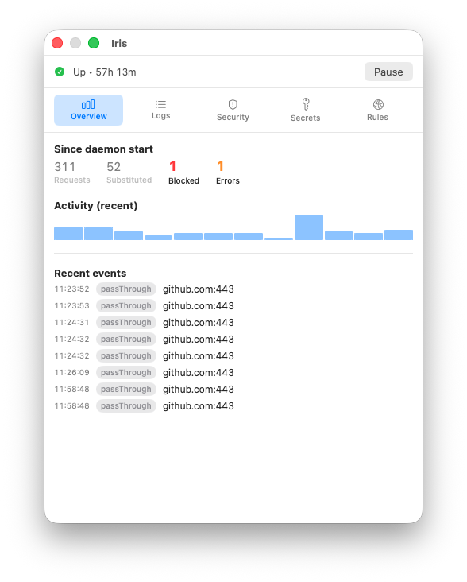
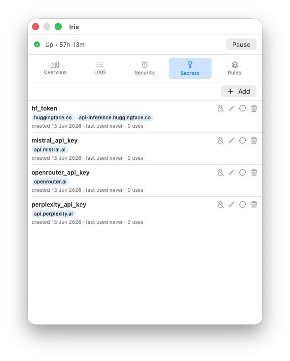
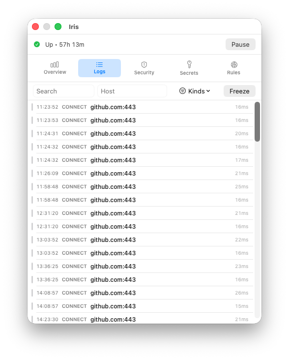
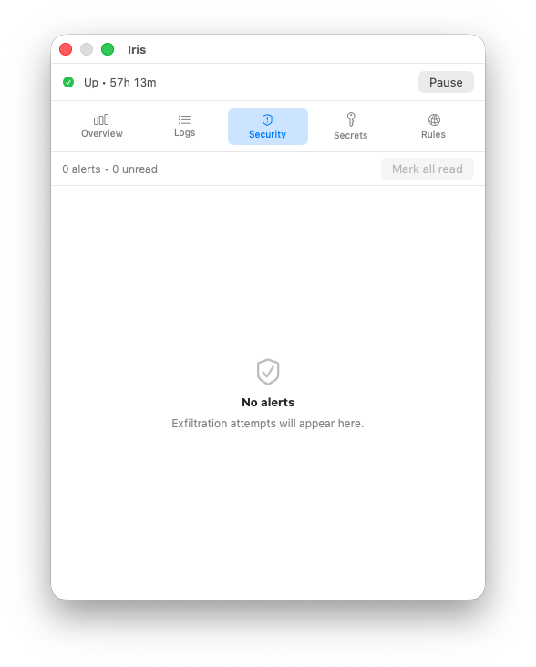
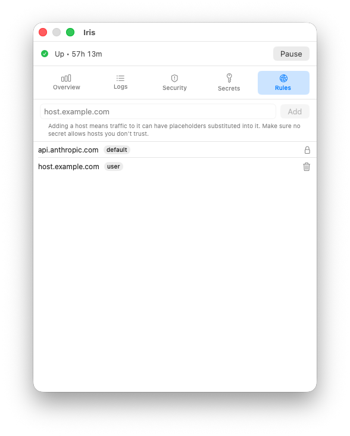
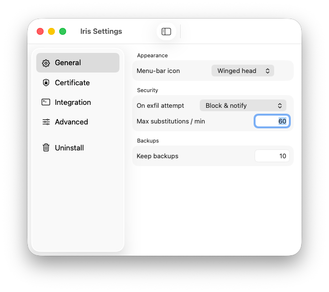
19Démarrage automatiqueAuto-start¶
IRIS s'enregistre auprès de macOS via SMAppService pour démarrer à l'ouverture de session.
Deux éléments distincts :
IRIS registers with macOS via SMAppService to start at login. Two distinct items:
- le service d'arrière-plan
irisd— un LaunchAgent enregistré depuis le bundle, relancé parlaunchdau login et après un redémarrage ; - l'application menu-bar — un élément d'ouverture de session
(
SMAppService.mainApp).
- the background service
irisd— a LaunchAgent registered from the bundle, relaunched bylaunchdat login and after a reboot; - the menu bar app — a login item
(
SMAppService.mainApp).
Les deux sont activés au premier lancement de l'app, puis pilotés depuis l'onglet Settings → Launch at login (deux interrupteurs indépendants) ou via Réglages Système → Général → Ouverture. Si macOS exige une approbation, l'app l'indique et propose d'ouvrir le panneau concerné.
Both are enabled on the app's first launch, then controlled from the Settings → Launch at login tab (two independent switches) or via System Settings → General → Login Items. If macOS requires approval, the app says so and offers to open the relevant pane.
Le daemon tourne avec RunAtLoad + KeepAlive : s'il s'arrête,
launchd le relance. Le plist est embarqué dans le bundle
(Iris.app/Contents/Library/LaunchAgents/io.iris.daemon.plist) — rien à installer à la
main.
The daemon runs with RunAtLoad + KeepAlive: if it stops,
launchd relaunches it. The plist is embedded in the bundle
(Iris.app/Contents/Library/LaunchAgents/io.iris.daemon.plist) — nothing to install by
hand.
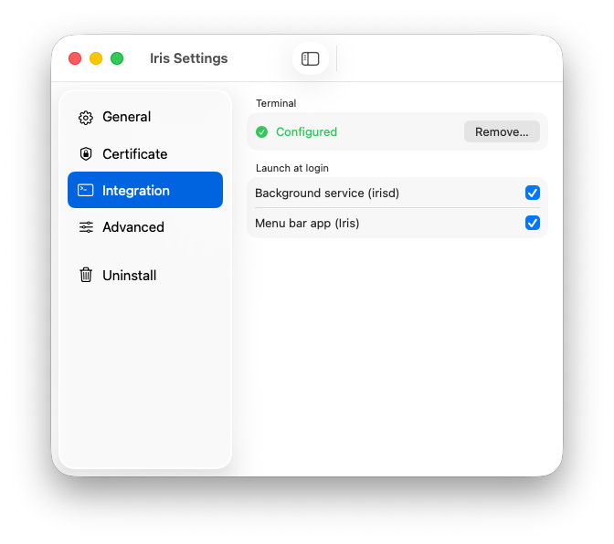
Lancement manuel (développement)
Manual launch (development)
Pour un build depuis les sources, sans bundle ni SMAppService :
For a build from source, without a bundle or SMAppService:
# Foreground — voir les logs en direct
.build/release/irisd --foreground# Foreground — see the logs live
.build/release/irisd --foreground20Distribution & désinstallationDistribution & uninstall¶
Distribution
Distribution
IRIS est distribué sous forme d'un Iris.pkg unique, signé Developer ID et
notarisé par Apple, produit par packaging/build-pkg.sh puis
packaging/notarize.sh (pipeline archive → codesign → productbuild → notarytool →
stapler). Le ticket de notarisation est agrafé au pkg : l'installation fonctionne hors-ligne et
sans avertissement Gatekeeper. Les binaires (irisd, iris) sont signés en
hardened runtime ; l'ACL Keychain est liée à la signature d'irisd (chapitre 5).
IRIS ships as a single Iris.pkg, Developer ID signed and
notarized by Apple, produced by packaging/build-pkg.sh then
packaging/notarize.sh (pipeline archive → codesign → productbuild → notarytool →
stapler). The notarization ticket is stapled to the pkg: installation works offline and with no
Gatekeeper warning. The binaries (irisd, iris) are signed with the hardened
runtime; the Keychain ACL is bound to irisd's signature (chapter 5).
Désinstallation
Uninstall
Deux chemins, tous deux sans suppression silencieuse des secrets :
Two paths, both without silently deleting secrets:
- Depuis l'app — onglet Settings → Quit & Uninstall…. Un dialogue
propose « garder mes secrets » ou « supprimer mes secrets ». Le daemon (seul à posséder l'ACL Keychain)
retire la clé CA et, si demandé, les secrets ; l'app retire la CA du trust store, restaure les fichiers
MCP wrappés, enlève le bloc
~/.zshrc, désenregistre le démarrage automatique, puis affiche un récapitulatif. - Script autonome —
uninstall.sh, déposé dans~/Library/Application Support/iris/par l'installeur (il survit au glisser-corbeille de l'app). Utile si l'app a déjà été jetée. Demande le mot de passe ; les secrets ne sont supprimés qu'avec l'option explicite.
- From the app — Settings → Quit & Uninstall… tab. A dialog
offers "keep my secrets" or "delete my secrets". The daemon (the only one holding the Keychain ACL)
removes the CA key and, if requested, the secrets; the app removes the CA from the trust store,
restores the wrapped MCP files, removes the
~/.zshrcblock, deregisters auto-start, then shows a summary. - Standalone script —
uninstall.sh, dropped into~/Library/Application Support/iris/by the installer (it survives dragging the app to the Trash). Useful if the app is already gone. Asks for the password; secrets are deleted only with the explicit option.
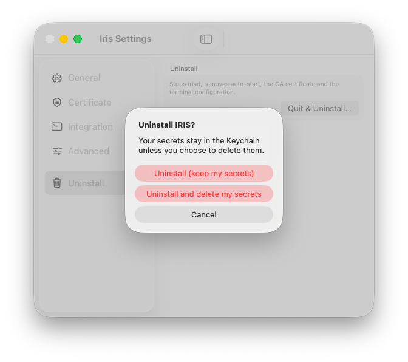
L'uninstall ne supprime jamais les secrets sans confirmation explicite. C'est une règle non-négociable du modèle.
Uninstall never deletes secrets without explicit confirmation. That's a non-negotiable rule of the model.
21DépannageTroubleshooting¶
iris doctor rapporte "Daemon down"
iris doctor reports "Daemon down"
# Le daemon est-il lancé ?
pgrep -lf irisd
# Avec le .pkg : le relancer via launchd (ou relancez simplement Iris.app)
launchctl kickstart -k gui/$(id -u)/io.iris.daemon
# Logs du daemon (redirigés par le LaunchAgent)
tail -f /tmp/irisd.err.log
# Build depuis les sources (mode dev) :
.build/release/irisd --foreground# Is the daemon running?
pgrep -lf irisd
# With the .pkg: relaunch it via launchd (or just relaunch Iris.app)
launchctl kickstart -k gui/$(id -u)/io.iris.daemon
# Daemon logs (redirected by the LaunchAgent)
tail -f /tmp/irisd.err.log
# Build from source (dev mode):
.build/release/irisd --foregroundcurl: (60) SSL certificate problem
curl: (60) SSL certificate problem
Le CA d'IRIS n'est pas dans le trust store ou pas dans NODE_EXTRA_CA_CERTS :
IRIS's CA isn't in the trust store, or not in NODE_EXTRA_CA_CERTS:
iris ca install # trust store de l'utilisateur
echo $NODE_EXTRA_CA_CERTS # doit pointer sur ca.pemiris ca install # user trust store
echo $NODE_EXTRA_CA_CERTS # must point to ca.pem401 invalid api key malgré le placeholder
401 invalid api key despite the placeholder
- Vérifier que
HTTPS_PROXYest exporté dans la session courante :echo $HTTPS_PROXY # → http://127.0.0.1:8888 - Vérifier que le secret référencé existe :
iris secret list | grep anthropic_api_key - Vérifier que l'host de destination est dans
allowed_hosts:iris secret show anthropic_api_key - Inspecter les events récents :
Un eventiris logs --follow --filter "kind=exfilBlocked"exfilBlockedindique que le scoping a refusé. Ajustez :iris secret edit anthropic_api_key --allowed-hosts api.anthropic.com
- Check that
HTTPS_PROXYis exported in the current session:echo $HTTPS_PROXY # → http://127.0.0.1:8888 - Check that the referenced secret exists:
iris secret list | grep anthropic_api_key - Check that the destination host is in
allowed_hosts:iris secret show anthropic_api_key - Inspect recent events:
Aniris logs --follow --filter "kind=exfilBlocked"exfilBlockedevent means scoping refused. Adjust:iris secret edit anthropic_api_key --allowed-hosts api.anthropic.com
Prompt Keychain à chaque accès
Keychain prompt on every access
L'ACL signed-binary n'est pas en place — typiquement parce que le binaire n'est pas signé (build
local) ou a été re-signé après l'enregistrement du secret. Workaround : cliquez "Always Allow" la
première fois pour chaque secret. Solution propre : installer le .pkg signé et notarisé,
dont l'ACL cible l'irisd signé.
The signed-binary ACL isn't in place — typically because the binary isn't signed (local
build) or was re-signed after the secret was registered. Workaround: click "Always Allow" the
first time for each secret. Clean fix: install the signed, notarized .pkg,
whose ACL targets the signed irisd.
Un serveur MCP n'utilise pas le proxy
An MCP server doesn't use the proxy
Certains binaires ignorent HTTPS_PROXY (clients HTTP custom, Bun avec configuration
non-standard). Utilisez iris mcp wrap pour injecter les variables directement dans le
bloc env de la config MCP du serveur en question.
Some binaries ignore HTTPS_PROXY (custom HTTP clients, Bun with a non-standard
config). Use iris mcp wrap to inject the variables directly into the
env block of that server's MCP config.
Apps GUI non interceptées
GUI apps not intercepted
Volontaire — HTTPS_PROXY ne traverse pas l'environnement Finder/Dock. Lancez l'app
depuis un terminal si vous voulez l'intercepter ponctuellement.
Intentional — HTTPS_PROXY doesn't cross the Finder/Dock environment. Launch the app
from a terminal if you want to intercept it occasionally.
Incompatibilité avec apiKeyHelper
Incompatibility with apiKeyHelper
Le bug claude-code#2646 fait
que quand apiKeyHelper est configuré, HTTPS_PROXY est ignoré pour les
requêtes d'inférence. iris doctor détecte cette configuration et la signale. Pour
migrer :
Bug claude-code#2646 means
that when apiKeyHelper is configured, HTTPS_PROXY is ignored for
inference requests. iris doctor detects this configuration and flags it. To
migrate:
iris secret add anthropic_api_key --allowed-hosts api.anthropic.com --value-from-stdin
# puis retirer apiKeyHelper de ~/.claude/settings.json
# puis exporter ANTHROPIC_API_KEY='{{kc:anthropic_api_key}}'iris secret add anthropic_api_key --allowed-hosts api.anthropic.com --value-from-stdin
# then remove apiKeyHelper from ~/.claude/settings.json
# then export ANTHROPIC_API_KEY='{{kc:anthropic_api_key}}'22FAQFAQ¶
Puis-je commiter mes .env contenant des {{kc:…}} ?
Can I commit my .env files containing {{kc:…}}?
Oui. Aucun secret réel n'y figure. C'est un des bénéfices d'IRIS — fin du .env.example
à dupliquer.
Yes. No real secret is in them. That's one of IRIS's benefits — no more .env.example
to duplicate.
Que se passe-t-il si je désinstalle IRIS ?
What happens if I uninstall IRIS?
Vos placeholders deviennent inertes (les requêtes sortent avec {{kc:…}} littéral → 401).
L'uninstall ne supprime pas vos secrets du trousseau sans confirmation explicite.
Your placeholders become inert (requests go out with the literal {{kc:…}} → 401).
Uninstall does not delete your secrets from the Keychain without explicit confirmation.
IRIS supporte-t-il HTTP/2 ?
Does IRIS support HTTP/2?
En MVP, ALPN force http/1.1 sur les deux côtés. Anthropic, GitHub, OpenAI acceptent
tous h1.1. Support HTTP/2 natif en roadmap si un upstream le rend obligatoire.
In the MVP, ALPN forces http/1.1 on both sides. Anthropic, GitHub, OpenAI all accept
h1.1. Native HTTP/2 support is on the roadmap if an upstream makes it mandatory.
Compatible avec direnv ?
Compatible with direnv?
Oui. direnv exporte des env vars comme n'importe quel mécanisme shell. Mettez vos
placeholders dans .envrc et c'est bon.
Yes. direnv exports env vars like any shell mechanism. Put your
placeholders in .envrc and you're good.
Multi-machine ou synchro iCloud des secrets ?
Multi-machine or iCloud secret sync?
Hors scope. Le trousseau iCloud peut techniquement synchroniser les items, mais l'ACL signed-binary ne traverse pas la synchro. À utiliser à vos risques.
Out of scope. The iCloud Keychain can technically sync the items, but the signed-binary ACL doesn't survive the sync. Use at your own risk.
Comment partager un secret avec un collègue ?
How do I share a secret with a colleague?
Délibérément non supporté. Passez par votre gestionnaire d'équipe (1Password, vault, etc.), puis chacun l'ajoute à son propre IRIS.
Deliberately not supported. Go through your team manager (1Password, vault, etc.), then each person adds it to their own IRIS.
Quel est l'impact en latence ?
What's the latency impact?
Le MITM ajoute typiquement < 5ms par requête (handshake TLS local + scan régex). Le streaming SSE est forwardé verbatim, donc zéro overhead sur les longues réponses Anthropic.
The MITM typically adds < 5ms per request (local TLS handshake + regex scan). The SSE stream is forwarded verbatim, so zero overhead on long Anthropic responses.
Que se passe-t-il si un fournisseur active le cert pinning ?
What happens if a provider enables cert pinning?
Game over pour la substitution sur ce host — l'agent rejetterait le cert leaf d'IRIS. Aucun fournisseur IA grand public ne pinne aujourd'hui dans ses SDK/CLI serveur, mais la situation peut changer sans préavis. Voir le chapitre §7 Compatibilité par fournisseur pour le détail des trois facteurs structurels (F1 pinning, F2 HTTP/2 mandatory, F3 request signing) et le tableau actualisé fournisseur par fournisseur.
Game over for substitution on that host — the agent would reject IRIS's leaf cert. No mainstream AI provider pins today in its server SDKs/CLIs, but that can change without notice. See chapter §7 Per-provider compatibility for the three structural factors (F1 pinning, F2 HTTP/2 mandatory, F3 request signing) and the up-to-date per-provider table.
IRIS marche-t-il avec AWS Bedrock ou GCP Vertex AI ?
Does IRIS work with AWS Bedrock or GCP Vertex AI?
Bedrock : non, hors modèle. Le SDK signe le canonical request avec SigV4
avant l'envoi : substituer le placeholder dans un header au dernier moment invalide la
signature. Demanderait un wrapper SDK ou un reverse-proxy SigV4-aware.
Vertex AI : partiel. Les endpoints REST h1.1-compatibles fonctionneront dès que
le support HTTP/2 est livré ; le SDK officiel privilégie gRPC, qui exige h2 et n'est donc pas
intercepté en MVP. Gemini AI Studio (generativelanguage.googleapis.com)
en revanche fonctionne dès aujourd'hui — REST + token plat dans x-goog-api-key.
Bedrock: no, out of model. The SDK signs the canonical request with SigV4
before sending: substituting the placeholder into a header at the last moment invalidates the
signature. Would require an SDK wrapper or a SigV4-aware reverse proxy.
Vertex AI: partial. The h1.1-compatible REST endpoints will work as soon as
HTTP/2 support ships; the official SDK favors gRPC, which requires h2 and is therefore not
intercepted in the MVP. Gemini AI Studio (generativelanguage.googleapis.com)
does work today — REST + flat token in x-goog-api-key.
23PluginsPlugins¶
Un plugin IRIS est un programme externe qui s'insère dans le flux d'une requête (cf. chapitre 4), avant le scan d'exfiltration et la substitution d'IRIS. Il tourne hors-process, dans une sandbox, et dialogue avec le daemon par un protocole JSON sur stdio. Cas d'usage typiques : taguer ou réécrire des requêtes, appliquer une politique (laisser passer / bloquer), ou renvoyer une réponse synthétique — le tout sans jamais voir vos secrets.
An IRIS plugin is an external program that inserts itself into the request flow (see chapter 4), before IRIS's exfiltration scan and substitution. It runs out-of-process, in a sandbox, and talks to the daemon over a JSON-on-stdio protocol. Typical uses: tag or rewrite requests, enforce a policy (pass / block), or return a synthetic response — all without ever seeing your secrets.
Modèle de sécurité
Security model
Invariant : un plugin ne voit jamais la valeur d'un secret. Au moment du hook
(on_request), la requête ne contient que les placeholders {{kc:NAME}} ; IRIS
substitue les vraies valeurs après le passage de tous les plugins. Le scan
d'exfiltration et le scoping allowed_hosts tournent eux aussi toujours après les plugins,
et ne sont jamais désactivables par un plugin.
Invariant: a plugin never sees a secret's value. At hook time
(on_request), the request carries only {{kc:NAME}} placeholders; IRIS
substitutes the real values after all plugins have run. The exfiltration scan and
allowed_hosts scoping likewise always run after plugins, and can never be disabled by a
plugin.
- Sandbox deny-default : le sous-process n'a aucun accès réseau ni fichier par défaut.
- Capabilities : le manifest déclare ses besoins (
network,filesystem) ; vous les approuvez explicitement à l'activation. - Provenance (TOFU) : un hash du contenu du dossier est épinglé à l'installation. Toute modification ultérieure du plugin → état ré-approbation requise, plugin suspendu.
- Deny-default sandbox: the subprocess gets no network and no filesystem access by default.
- Capabilities: the manifest declares its needs (
network,filesystem); you approve them explicitly at enable time. - Provenance (TOFU): a content hash of the plugin directory is pinned at install time. Any later change to the plugin → re-approval required state, plugin suspended.
Le pipeline en détail
The pipeline in detail
Les plugins activés forment une chaîne ordonnée (champ order). Pour chaque
requête déchiffrée (placeholders only), IRIS évalue le match de chaque plugin ; les plugins
applicables sont invoqués dans l'ordre. Un plugin peut court-circuiter la chaîne (block ou
respond). Quoi qu'il arrive, le scan d'exfiltration, le scoping et la substitution d'IRIS
s'exécutent ensuite — jamais avant, jamais contournés (invariant §3).
Enabled plugins form an ordered chain (the order field). For each decrypted
request (placeholders only), IRIS evaluates each plugin's match; applicable plugins are
invoked in order. A plugin may short-circuit the chain (block or respond).
Either way, IRIS's exfiltration scan, scoping and substitution run afterwards — never
before, never bypassed (invariant §3).
decrypted request (placeholders {{kc:…}})
│
▼
plugin chain, evaluated in `order`:
plugin A ─ match? ─▶ on_request ─▶ action
plugin B ─ match? ─▶ on_request ─▶ action
…
action ∈ { pass | modify | block | respond }
block / respond ⇒ short-circuit, nothing forwarded upstream
│
▼
IRIS exfil scan · scoping · substitution (ALWAYS runs after plugins)
│
▼
upstreamGérer les plugins — application
Managing plugins — app
Dans la fenêtre Réglages, la section Plugins permet, sans la ligne de commande : installer depuis un dossier, activer (avec un consentement explicite des capabilities), désactiver, réordonner la chaîne avec les boutons ↑/↓, et supprimer. Chaque plugin affiche son état (activé / désactivé / ré-approbation requise), ses capabilities déclarées et son empreinte de provenance (TOFU).
In the Settings window, the Plugins section lets you, without the command line: install from a directory, enable (with explicit capability consent), disable, reorder the chain with ↑/↓ buttons, and remove. Each plugin shows its state (enabled / disabled / re-approval required), its declared capabilities and its provenance fingerprint (TOFU).
Gérer les plugins — CLI
Managing plugins — CLI
iris plugin list # plugins installés + état
iris plugin install <dossier> # valide, montre les capabilities, installe (désactivé), épingle le hash
iris plugin info <id> # manifest, capabilities, hash, état
iris plugin enable <id> # approuve les capabilities + active
iris plugin disable <id> # désactive
iris plugin rm <id> # supprime
iris plugin reorder <id> <index> # position dans la chaîne de hooks (index base 0)iris plugin list # installed plugins + state
iris plugin install <dir> # validate, show capabilities, install (disabled), pin the hash
iris plugin info <id> # manifest, capabilities, hash, state
iris plugin enable <id> # approve capabilities + enable
iris plugin disable <id> # disable
iris plugin rm <id> # remove
iris plugin reorder <id> <index> # position in the hook chain (0-based)Écrire un plugin — le manifest
Writing a plugin — the manifest
Chaque plugin est un dossier contenant un plugin.json et un exécutable. Exemple
(examples/plugins/header-tagger) :
Each plugin is a directory containing a plugin.json and an executable. Example
(examples/plugins/header-tagger):
{
"id": "org.iris.example.header-tagger",
"name": "Header Tagger",
"version": "1.0.0",
"description": "Adds an X-Iris-Plugin header to matched requests (example plugin).",
"api_version": 1,
"executable": ".build/release/header-tagger",
"hooks": [
{ "event": "on_request",
"match": { "hosts": ["api.anthropic.com"], "methods": ["POST"], "path_regex": "^/v1/" },
"mutates": true, "on_failure": "skip", "timeout_ms": 200 }
],
"capabilities": { "network": [], "filesystem": [] }
}id: identifiant unique (reverse-DNS recommandé).executable: chemin relatif au dossier du plugin.api_version: version du contrat IPC ; IRIS refuse une version non supportée.hooks[].event:on_request(seul événement en v1).hooks[].match: conditions de déclenchement —hosts(correspondance exacte, pas de glob),methods,path_regex. Vide = tout.hooks[].mutates: le hook peut-il modifier la requête.hooks[].on_failure:skip(ignorer le plugin, continuer) oublock(échec fermé).hooks[].timeout_ms: délai par appel, plafonné par IRIS à 5 s.capabilities.network: liste dehost:portautorisés en sortie ; vide = aucune sortie réseau.capabilities.filesystem:["scratch"]= un dossier de travail dédié ; vide = aucun accès fichier.
id: unique identifier (reverse-DNS recommended).executable: path relative to the plugin directory.api_version: IPC contract version; IRIS rejects an unsupported version.hooks[].event:on_request(the only event in v1).hooks[].match: trigger conditions —hosts(exact match, no glob),methods,path_regex. Empty = everything.hooks[].mutates: whether the hook may modify the request.hooks[].on_failure:skip(ignore the plugin, continue) orblock(fail closed).hooks[].timeout_ms: per-call deadline, capped by IRIS at 5 s.capabilities.network: list of allowedhost:portegress; empty = no network.capabilities.filesystem:["scratch"]= a dedicated working directory; empty = no filesystem access.
Hooks, conditions et codes retour
Hooks, conditions and return codes
Événements (hooks[].event)
Events (hooks[].event)
| Événement | Statut | Déclenchement |
|---|---|---|
on_request | v1 | Sur chaque requête sortante matchée, avant le scan. |
on_response | à venir | Sur la réponse upstream (roadmap). |
on_complete | à venir | À la fin de l'échange (roadmap). |
| Event | Status | Fires |
|---|---|---|
on_request | v1 | On each matched outgoing request, before the scan. |
on_response | planned | On the upstream response (roadmap). |
on_complete | planned | At the end of the exchange (roadmap). |
Conditions de déclenchement (hooks[].match)
Trigger conditions (hooks[].match)
| Champ | Type | Sémantique |
|---|---|---|
hosts | [string] | Hôtes ciblés, correspondance exacte (pas de glob). Vide = tous. |
methods | [string] | Méthodes HTTP (ex. POST). Vide = toutes. |
path_regex | string? | Regex sur le chemin (ex. ^/v1/). Absent = tous. |
content_type | string? | Filtre sur le Content-Type. Absent = tous. |
| Field | Type | Semantics |
|---|---|---|
hosts | [string] | Target hosts, exact match (no glob). Empty = all. |
methods | [string] | HTTP methods (e.g. POST). Empty = all. |
path_regex | string? | Regex on the path (e.g. ^/v1/). Absent = all. |
content_type | string? | Filter on the Content-Type. Absent = all. |
Codes retour (action de la réponse on_request)
Return codes (the action of the on_request reply)
| Action | Champs | Effet |
|---|---|---|
pass | — | Ne rien changer ; continuer la chaîne. |
modify | headers, uri, body (optionnels) | Overlay des headers par nom (les autres préservés, dont le placeholder) ; remplace URI/body si fournis. Pas de suppression de header en v1. |
block | reason | Court-circuit : 403, rien forwardé. |
respond | status, headers, body | Court-circuit : réponse synthétique, rien forwardé. |
| Action | Fields | Effect |
|---|---|---|
pass | — | Change nothing; continue the chain. |
modify | headers, uri, body (optional) | Overlay headers by name (others preserved, incl. the placeholder); replace URI/body if provided. No header removal in v1. |
block | reason | Short-circuit: 403, nothing forwarded. |
respond | status, headers, body | Short-circuit: synthetic response, nothing forwarded. |
En cas d'échec (hooks[].on_failure — timeout ou erreur du plugin)
On failure (hooks[].on_failure — plugin timeout or error)
| Valeur | Comportement |
|---|---|
skip | Ignorer ce plugin et continuer (défaut — transformeurs). |
block | Échec fermé : la requête est bloquée (plugins de politique). |
| Value | Behavior |
|---|---|
skip | Ignore this plugin and continue (default — transformers). |
block | Fail closed: the request is blocked (policy plugins). |
Écrire un plugin — le protocole
Writing a plugin — the protocol
IRIS (le daemon) est le client ; le plugin est le serveur. Cadrage
NDJSON : un objet JSON compact par ligne, sur stdin (requêtes) et stdout (réponses). Le
plugin doit renvoyer l'id reçu. Trois méthodes sur la durée de vie d'un plugin :
IRIS (the daemon) is the client; the plugin is the server.
NDJSON framing: one compact JSON object per line, on stdin (requests) and stdout
(replies). The plugin must echo back the received id. Three methods over a
plugin's lifetime:
initialize(au démarrage) → répondre une fois avec une réponse JSON-RPC valide, p. ex.{"jsonrpc":"2.0","id":1,"result":{"ready":true}}.on_request(par requête matchée) → répondre unaction(pass/modify/block/respond— voir le tableau Codes retour ci-dessus).shutdown(à la désactivation) → sortir proprement.
initialize(at startup) → reply once with a valid JSON-RPC response, e.g.{"jsonrpc":"2.0","id":1,"result":{"ready":true}}.on_request(per matched request) → reply anaction(pass/modify/block/respond— see the Return codes table above).shutdown(at disable) → exit gracefully.
Exemple d'échange on_request (daemon → plugin, puis plugin → daemon) :
Example on_request exchange (daemon → plugin, then plugin → daemon):
// daemon → plugin
{"jsonrpc":"2.0","id":7,"method":"on_request","params":{
"method":"POST","uri":"/v1/messages","host":"api.anthropic.com",
"headers":[["x-api-key","{{kc:anthropic_api_key}}"],["content-type","application/json"]],
"body":{"encoding":"utf8","data":"{\"prompt\":\"hi\"}"}}}
// plugin → daemon
{"jsonrpc":"2.0","id":7,"result":{"action":"modify",
"headers":[["X-Iris-Plugin","header-tagger"]]}}Exemple complet
Complete example
Le même plugin — un « tagger » qui répond modify — dans les principaux langages. Chaque
version est autonome (bibliothèque standard uniquement) et lit/écrit du NDJSON sur stdin/stdout.
L'exemple Swift complet est fourni dans examples/plugins/header-tagger.
The same plugin — a "tagger" that replies modify — in the main languages. Each version is
self-contained (standard library only) and reads/writes NDJSON over stdin/stdout. The full Swift example
ships in examples/plugins/header-tagger.
import Foundation
func emitLine(_ object: [String: Any]) {
guard let data = try? JSONSerialization.data(withJSONObject: object) else { return }
try? FileHandle.standardOutput.write(contentsOf: data)
try? FileHandle.standardOutput.write(contentsOf: Data("\n".utf8))
}
while let line = readLine(strippingNewline: true) {
guard let data = line.data(using: .utf8),
let object = try? JSONSerialization.jsonObject(with: data) as? [String: Any]
else { continue }
let id = object["id"] ?? NSNull() // echo the request id back
switch object["method"] as? String {
case "initialize":
emitLine(["jsonrpc": "2.0", "id": id, "result": ["ready": true]])
case "on_request":
emitLine(["jsonrpc": "2.0", "id": id,
"result": ["action": "modify", "headers": [["X-Iris-Plugin", "header-tagger"]]]])
case "shutdown":
exit(0)
default:
break
}
}import sys, json
for line in sys.stdin:
line = line.strip()
if not line:
continue
try:
msg = json.loads(line)
except ValueError:
continue # ignore non-JSON lines
mid, method = msg.get("id"), msg.get("method")
if method == "initialize":
result = {"ready": True}
elif method == "on_request":
result = {"action": "modify", "headers": [["X-Iris-Plugin", "header-tagger"]]}
elif method == "shutdown":
break
else:
continue
out = json.dumps({"jsonrpc": "2.0", "id": mid, "result": result}, separators=(",", ":"))
sys.stdout.write(out + "\n")
sys.stdout.flush() # NDJSON: flush each reply so the daemon sees itconst readline = require("readline");
const rl = readline.createInterface({ input: process.stdin });
rl.on("line", (line) => {
line = line.trim();
if (!line) return;
let msg;
try { msg = JSON.parse(line); } catch { return; } // ignore non-JSON lines
let result;
switch (msg.method) {
case "initialize":
result = { ready: true };
break;
case "on_request":
result = { action: "modify", headers: [["X-Iris-Plugin", "header-tagger"]] };
break;
case "shutdown":
process.exit(0);
default:
return;
}
process.stdout.write(JSON.stringify({ jsonrpc: "2.0", id: msg.id, result }) + "\n");
});package main
import (
"bufio"
"encoding/json"
"os"
)
type request struct {
ID json.RawMessage `json:"id"` // echo back verbatim
Method string `json:"method"`
}
func main() {
r := bufio.NewReader(os.Stdin) // handles lines longer than bufio.Scanner's 64 KiB
w := bufio.NewWriter(os.Stdout)
for {
line, err := r.ReadBytes('\n')
if len(line) > 0 {
var req request
if json.Unmarshal(line, &req) == nil {
var result any
switch req.Method {
case "initialize":
result = map[string]any{"ready": true}
case "on_request":
result = map[string]any{"action": "modify",
"headers": [][]string{{"X-Iris-Plugin", "header-tagger"}}}
case "shutdown":
return
}
if result != nil {
out, _ := json.Marshal(map[string]any{"jsonrpc": "2.0", "id": req.ID, "result": result})
w.Write(out)
w.WriteByte('\n')
w.Flush() // NDJSON: flush each reply
}
}
}
if err != nil {
return
}
}
}#!/usr/bin/env bash
# Any language that reads stdin and writes stdout works. Here: bash + jq.
while IFS= read -r line || [ -n "$line" ]; do
[ -z "$line" ] && continue
method=$(printf '%s' "$line" | jq -r '.method // empty')
id=$(printf '%s' "$line" | jq -c '.id // null')
case "$method" in
initialize)
jq -nc --argjson id "$id" '{jsonrpc:"2.0",id:$id,result:{ready:true}}' ;;
on_request)
jq -nc --argjson id "$id" \
'{jsonrpc:"2.0",id:$id,result:{action:"modify",headers:[["X-Iris-Plugin","header-tagger"]]}}' ;;
shutdown)
exit 0 ;;
esac
done# Construire, installer, activer
swift build -c release
iris plugin install examples/plugins/header-tagger
iris plugin enable org.iris.example.header-tagger# Build, install, enable
swift build -c release
iris plugin install examples/plugins/header-tagger
iris plugin enable org.iris.example.header-taggerLe hash est épinglé à l'installation (TOFU). Si vous reconstruisez le binaire après
coup, le contenu change et IRIS marque le plugin ré-approbation requise : supprimez puis
réinstallez pour ré-épingler (iris plugin rm <id> puis install — il n'y a
pas de réinstallation en place). La référence complète du protocole est dans
docs/plugins-design.md §8.
The hash is pinned at install time (TOFU). If you rebuild the binary afterwards, the
content changes and IRIS marks the plugin re-approval required: remove then reinstall to
re-pin (iris plugin rm <id> then install — there is no in-place
reinstall). The full protocol reference lives in docs/plugins-design.md §8.
AÉtat d'implémentationImplementation status¶
| Composant | Phase | Statut |
|---|---|---|
| Setup repo, Package.swift, CI minimale | Phase 0 | livré |
| IrisKit : modèles, config JSON, Keychain abstrait, CA | Phase 1 | livré |
| irisd : proxy MITM monothread + substitution naïve | Phase 2 | livré |
| CONNECT-tunnel passthrough non-whitelist | Phase 2.1 | livré |
| IPC admin Unix socket + SSE events | Phase 3 | livré |
Scoping allowed_hosts + règles R1–R5 | Phase 4 | livré |
| CLI iris (secret, status, ca, config, rule, pause/resume) | Phase 5.1 | livré |
| CLI iris logs + doctor + /__iris_ping | Phase 5.2 | livré |
| CLI iris mcp wrap/unwrap (JSON + JSONC + watch) | Phase 5.3 | livré |
| Menu bar app Iris.app (6 onglets, dont Settings) | Phase 6 | livré |
| LaunchAgent + SMAppService integration | Phase 7 | livré |
| Trust store install + ACL Keychain signed-binary | Phase 8 | livré |
| .pkg signé Developer ID + notarisé | Phase 9 | livré |
| Hardening, fuzzing, tests d'intégration | Phase 10 | livré |
| Streaming de la réponse au fil de l'eau | Phase 2.x | livré |
| Installation complète (CLI distribuée, terminal) + désinstallation | v1.0 | livré |
| Component | Phase | Status |
|---|---|---|
| Repo setup, Package.swift, minimal CI | Phase 0 | shipped |
| IrisKit: models, JSON config, abstracted Keychain, CA | Phase 1 | shipped |
| irisd: single-threaded MITM proxy + naive substitution | Phase 2 | shipped |
| Non-whitelist CONNECT-tunnel passthrough | Phase 2.1 | shipped |
| Admin Unix socket IPC + SSE events | Phase 3 | shipped |
allowed_hosts scoping + R1–R5 rules | Phase 4 | shipped |
| CLI iris (secret, status, ca, config, rule, pause/resume) | Phase 5.1 | shipped |
| CLI iris logs + doctor + /__iris_ping | Phase 5.2 | shipped |
| CLI iris mcp wrap/unwrap (JSON + JSONC + watch) | Phase 5.3 | shipped |
| Menu bar app Iris.app (6 tabs, including Settings) | Phase 6 | shipped |
| LaunchAgent + SMAppService integration | Phase 7 | shipped |
| Trust store install + signed-binary Keychain ACL | Phase 8 | shipped |
| .pkg Developer ID signed + notarized | Phase 9 | shipped |
| Hardening, fuzzing, integration tests | Phase 10 | shipped |
| Streaming the response as it arrives | Phase 2.x | shipped |
| Full install (distributed CLI, terminal) + uninstall | v1.0 | shipped |
BLimites d'usage côté dev soloUsage limits for the solo dev¶
En miroir du tableau du §7 (compatibilité côté fournisseurs), voici l'inventaire honnête des usages qu'IRIS ne couvre pas, classés par probabilité qu'un développeur solo croise le mur.
Mirroring the §7 table (provider-side compatibility), here's the honest inventory of uses IRIS does not cover, ranked by how likely a solo developer is to hit the wall.
| # | Usage non couvert | Pourquoi | Proba | Mitigation |
|---|---|---|---|---|
| 1 | Apps GUI avec IA intégrée Cursor, Continue, Cody, Zed |
Lancées depuis Dock / Spotlight → n'héritent pas de l'env IRIS (objectif G8 SPECS) ; et leur IA native passe par le backend du fournisseur (auth propriétaire), donc aucun placeholder à substituer | élevée | Le terminal intégré de l'éditeur hérite de l'env (il source ~/.zshrc) : y lancer un agent CLI (claude…) est couvert, tout comme les serveurs MCP via iris mcp wrap. Seule l'IA native de l'éditeur reste hors IRIS. |
| 2 | Docker / dev containers | 127.0.0.1 côté container ≠ host. Le proxy n'est pas joignable par défaut. |
moyenne | --network host ou host.docker.internal:8888 + monter ca.pem en volume. Faisable, à scripter. |
| 3 | Multi-machine laptop + desktop, nouvelle machine |
Keychain local, pas de sync (G1 — single-machine) | moyenne | Re-ajouter les secrets à la main sur chaque machine. Quelques minutes par machine. |
| 4 | LaunchAgents / cron jobs écrits soi-même | launchd n'hérite pas du shell env |
moyenne | Injecter les vars dans le plist (EnvironmentVariables) à la main. |
| 5 | AWS Bedrock (SigV4) | Signature dérivée de la clé secrète, hors modèle de substitution (cf §7, facteur F3) | faible | Aucune. Sortir de l'env IRIS (ex. op run ponctuel) pour ces appels. |
| 6 | GCP Vertex AI via SDK gRPC | HTTP/2 mandatory ; IRIS MVP force h1.1 en ALPN (cf §7, facteur F2) | faible | Utiliser les endpoints REST où ils existent, sinon attendre support HTTP/2 (roadmap). |
| 7 | Binaires Go/Bun à client HTTP custom ignorant HTTPS_PROXY |
Implémentations non-standard qui n'appellent pas http.ProxyFromEnvironment ou équivalent |
faible | Si MCP : iris mcp wrap patche le bloc env du serveur. Sinon : config explicite du proxy dans l'outil. |
| 8 | Clients cert-pinnés | Refusent le cert leaf émis par la CA locale (cf §7, facteur F1) | quasi nulle | Aucune. Surveiller les changelogs des SDK concernés. |
| # | Uncovered use | Why | Prob. | Mitigation |
|---|---|---|---|---|
| 1 | GUI apps with built-in AI Cursor, Continue, Cody, Zed |
Launched from Dock / Spotlight → don't inherit the IRIS env (SPECS goal G8); and their native AI goes through the provider's backend (proprietary auth), so there's no placeholder to substitute | high | The editor's integrated terminal inherits the env (it sources ~/.zshrc): running a CLI agent (claude…) there is covered, as are MCP servers via iris mcp wrap. Only the editor's native AI stays outside IRIS. |
| 2 | Docker / dev containers | 127.0.0.1 inside the container ≠ host. The proxy isn't reachable by default. |
medium | --network host or host.docker.internal:8888 + mount ca.pem as a volume. Doable, scriptable. |
| 3 | Multi-machine laptop + desktop, new machine |
Local Keychain, no sync (G1 — single-machine) | medium | Re-add the secrets by hand on each machine. A few minutes per machine. |
| 4 | Self-written LaunchAgents / cron jobs | launchd doesn't inherit the shell env |
medium | Inject the vars into the plist (EnvironmentVariables) by hand. |
| 5 | AWS Bedrock (SigV4) | Signature derived from the secret key, outside the substitution model (see §7, factor F3) | low | None. Step out of the IRIS env (e.g. an occasional op run) for those calls. |
| 6 | GCP Vertex AI via the gRPC SDK | HTTP/2 mandatory; the IRIS MVP forces h1.1 in ALPN (see §7, factor F2) | low | Use the REST endpoints where they exist, otherwise wait for HTTP/2 support (roadmap). |
| 7 | Go/Bun binaries with a custom HTTP client ignoring HTTPS_PROXY |
Non-standard implementations that don't call http.ProxyFromEnvironment or equivalent |
low | If MCP: iris mcp wrap patches the server's env block. Otherwise: explicit proxy config in the tool. |
| 8 | Cert-pinned clients | Reject the leaf cert issued by the local CA (see §7, factor F1) | near zero | None. Watch the changelogs of the SDKs involved. |
Lecture pratique
Practical reading
Sweet spot 100% couvert — le workflow CLI agentique standard :
100% covered sweet spot — the standard agentic CLI workflow:
- Les agents IA en ligne de commande (auto-pilotés)
gh,git,curl,wget- Scripts Python / Node utilisant les SDK Anthropic / OpenAI
- Serveurs MCP en stdio spawnés par ces agents
npm installavec token registry privé (npm honoreHTTPS_PROXY)- Tout binaire qui hérite honnêtement de l'env shell et respecte les conventions proxy
- Command-line AI agents (self-driving)
gh,git,curl,wget- Python / Node scripts using the Anthropic / OpenAI SDKs
- stdio MCP servers spawned by those agents
npm installwith a private registry token (npm honorsHTTPS_PROXY)- Any binary that honestly inherits the shell env and respects the proxy conventions
Le vrai blocker en pratique : ligne 1 (GUI editors avec IA). Si vous utilisez Cursor, Continue ou Zed en parallèle de votre agent CLI, ces outils ne passent pas par IRIS. Vu l'adoption massive de Cursor chez les devs solos, c'est probablement le scénario qui vous concerne en premier — et la raison pour laquelle des outils comme Cordon ou le sandbox Docker existent en parallèle.
The real blocker in practice: row 1 (GUI editors with AI). If you use Cursor, Continue, or Zed alongside your CLI agent, those tools don't go through IRIS. Given Cursor's massive adoption among solo devs, this is probably the scenario that concerns you first — and the reason tools like Cordon or the Docker sandbox exist in parallel.
Lignes 2–4 (Docker, multi-machine, cron) : friction acceptable. Solvables par config ponctuelle, juste pas zéro-friction. Un dev solo discipliné les absorbe.
Rows 2–4 (Docker, multi-machine, cron): acceptable friction. Solvable with one-off config, just not zero-friction. A disciplined solo dev absorbs them.
Lignes 5–8 : non-événements pour le dev solo classique. Bedrock et Vertex gRPC sont du territoire enterprise. Bun à client HTTP custom et pinning sont des cas rares.
Rows 5–8: non-events for the typical solo dev. Bedrock and Vertex gRPC are enterprise territory. Custom-HTTP-client Bun and pinning are rare cases.
La bonne question à se poser n'est pas « IRIS couvre-t-il 100% de mes usages ? »
(réponse : non, ligne 1 garantit que non si vous utilisez Cursor), mais
« IRIS couvre-t-il les usages les plus risqués ? ». Et là oui : ce sont précisément
les agents CLI auto-pilotés (un agent en mode --dangerously-skip-permissions,
agents MCP avec tools sensibles) qui sont les plus exposés au prompt injection. Cursor en mode
"ask-and-apply" supervisé est statistiquement moins risqué — l'humain dans la boucle filtre.
The right question to ask isn't "does IRIS cover 100% of my uses?"
(answer: no, row 1 guarantees not if you use Cursor), but
"does IRIS cover the riskiest uses?". And there, yes: it's precisely
the self-driving CLI agents (an agent in --dangerously-skip-permissions mode,
MCP agents with sensitive tools) that are most exposed to prompt injection. Cursor in supervised
"ask-and-apply" mode is statistically less risky — the human in the loop filters.
Donc même sans couvrir Cursor, le ROI sécurité d'IRIS reste élevé si vous mettez votre clé Anthropic la plus sensible côté CLI agentique plutôt que côté Cursor. C'est un choix de répartition, pas un défaut binaire.
So even without covering Cursor, IRIS's security ROI stays high if you put your most sensitive Anthropic key on the agentic CLI side rather than the Cursor side. It's an allocation choice, not a binary flaw.
CGlossaireGlossary¶
| ACL Keychain | Liste de contrôle d'accès sur un item du trousseau, qui restreint quels binaires (référencés par leur signature) peuvent y accéder sans prompt utilisateur. |
| ALPN | Application-Layer Protocol Negotiation. Extension TLS qui négocie le protocole applicatif (http/1.1, h2…). IRIS l'utilise pour forcer h1.1. |
| CA (Certificate Authority) | Autorité de certification. Ici, locale, générée par IRIS au premier démarrage. |
| CONNECT | Méthode HTTP utilisée par un client pour demander à un proxy d'ouvrir un tunnel TCP brut (typiquement pour de l'HTTPS). |
| JSON-RPC 2.0 | Protocole RPC léger sur JSON. IRIS l'utilise pour son IPC admin sur socket Unix. |
| LaunchAgent | Service géré par launchd dans le contexte d'une session utilisateur (par opposition à LaunchDaemon, system-wide). |
| MCP | Model Context Protocol. Protocole utilisé par les LLM pour invoquer des outils externes. |
| MITM | Man-in-the-Middle. Ici, intentionnel et local : IRIS termine TLS, inspecte, re-encrypte. |
| Placeholder | Chaîne {{kc:NAME}} qui remplace une vraie valeur de credential dans l'env / les fichiers. |
| SAN | Subject Alternative Name. Extension de cert X.509 qui liste les noms DNS supplémentaires couverts. |
| Scoping | Restriction de l'usage d'un secret à une liste explicite d'hosts (allowed_hosts). |
| SMAppService | API moderne (macOS 13+) pour enregistrer un LaunchAgent ou LaunchDaemon depuis une app. Remplace le déprécié SMJobBless. |
| SSE | Server-Sent Events. Stream HTTP unidirectionnel utilisé par IRIS pour pousser les events au menu bar app et à iris logs --follow. |
| Keychain ACL | Access control list on a Keychain item that restricts which binaries (referenced by their signature) can access it without a user prompt. |
| ALPN | Application-Layer Protocol Negotiation. A TLS extension that negotiates the application protocol (http/1.1, h2…). IRIS uses it to force h1.1. |
| CA (Certificate Authority) | Certificate Authority. Here, local, generated by IRIS on first start. |
| CONNECT | HTTP method a client uses to ask a proxy to open a raw TCP tunnel (typically for HTTPS). |
| JSON-RPC 2.0 | A lightweight JSON RPC protocol. IRIS uses it for its admin IPC over a Unix socket. |
| LaunchAgent | A service managed by launchd in the context of a user session (as opposed to a LaunchDaemon, which is system-wide). |
| MCP | Model Context Protocol. The protocol used by LLMs to invoke external tools. |
| MITM | Man-in-the-Middle. Here, intentional and local: IRIS terminates TLS, inspects, re-encrypts. |
| Placeholder | The {{kc:NAME}} string that stands in for a real credential value in the env / files. |
| SAN | Subject Alternative Name. An X.509 cert extension that lists the additional DNS names covered. |
| Scoping | Restricting a secret's use to an explicit list of hosts (allowed_hosts). |
| SMAppService | Modern API (macOS 13+) to register a LaunchAgent or LaunchDaemon from an app. Replaces the deprecated SMJobBless. |
| SSE | Server-Sent Events. A one-way HTTP stream IRIS uses to push events to the menu bar app and to iris logs --follow. |